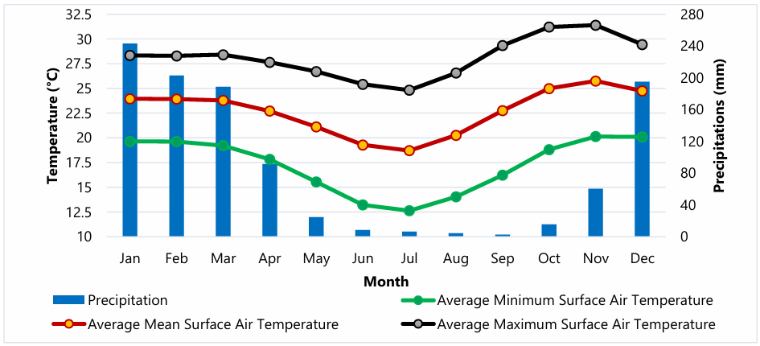
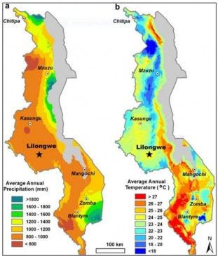
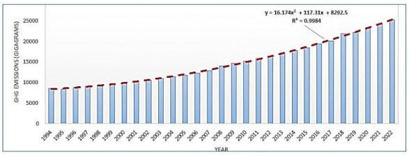
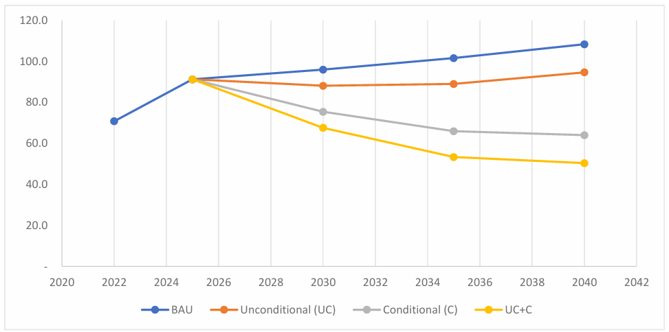
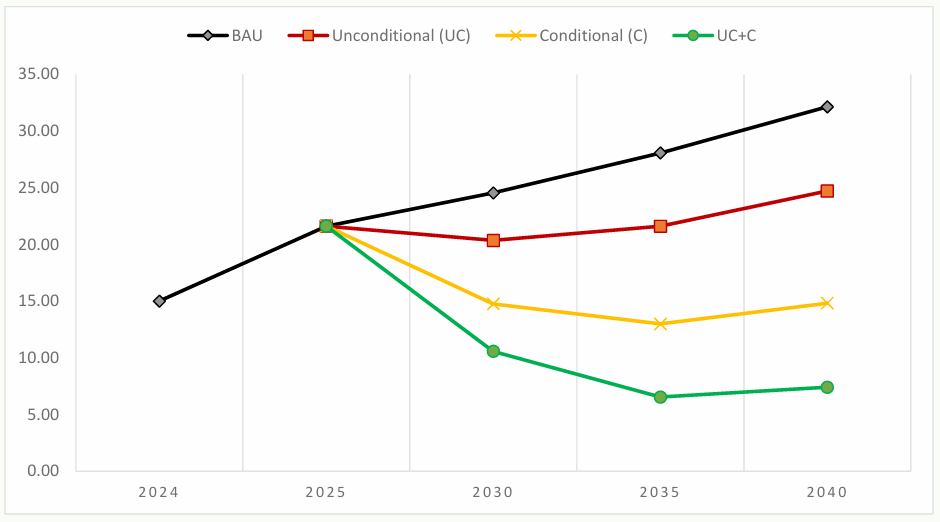
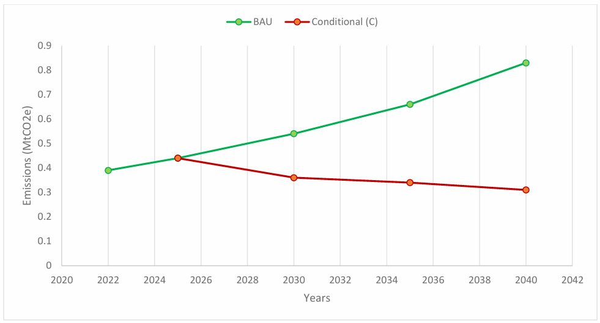
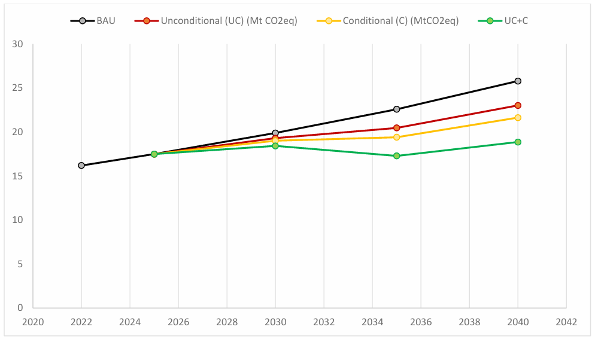
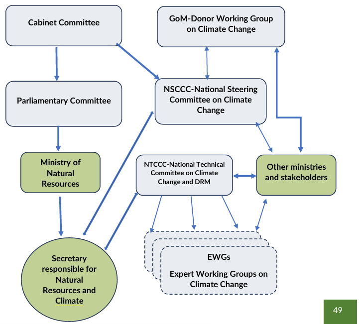
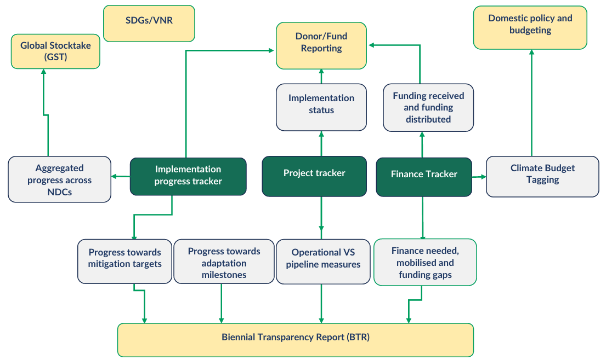

Malawi’s NDC 3.0
17 June, 2026
With the financial and technical support of:
Climate change remains one of the most pressing challenges facing the world today. For vulnerable countries such as Malawi, the impacts of climate change are not a distant threat but a lived reality. In recent years, the country has experienced increasingly frequent and severe climate-related events, such as Cyclone Idai and Cyclone Freddy, which have caused significant loss of life, displacement of communities, destruction of infrastructure and severe disruptions to livelihoods and ecosystems.
These experiences underscore the urgent need for ambitious and sustained climate action. At the same time, they highlight the importance of climate justice. Countries like Malawi contribute only a negligible share of global greenhouse gas emissions, yet they bear a disproportionate burden of the impacts of climate change, including growing loss and damage to lives, livelihoods and national development.
As a Party to the United Nations Framework Convention on Climate Change and the Paris Agreement, Malawi remains committed to contributing to global efforts to limit the increase in global temperatures while pursuing sustainable and climate-resilient development.
It is therefore my honour to present Malawi’s third Nationally Determined Contribution (NDC 3.0), which outlines the country’s increased ambition and commitment to climate action. This enhanced ambition demonstrates Malawi’s determination to play its part in addressing the global climate crisis while safeguarding the well-being of its citizens and ecosystems.
However, achieving these targets will require significant financial resources and sustained international cooperation. It is estimated that USD 7.06 billion will be required by 2035 to fully implement the actions outlined in this NDC. While the Government of Malawi remains committed to mobilizing domestic resources and strengthening national capacities, the scale of the challenge goes beyond what can be achieved through national efforts alone.
In this regard, Malawi calls upon the international community to fulfil its commitments under the Paris Agreement by providing predictable, adequate and accessible climate finance, as well as support for technology transfer and capacity building. Strengthened support is also needed to address Loss and Damage faced by vulnerable countries that are already experiencing the irreversible impacts of climate change.
Malawi remains committed to working in partnership with the global community to accelerate climate action, strengthen resilience and promote sustainable development for present and future generations. Together, we must transform ambition into meaningful action.
Patricia Wiskes, MP.
Minister of Natural Resources
I
The Government of Malawi is pleased to present its Third Nationally Determined Contribution (NDC 3.0), which sets out the country’s enhanced commitment to addressing the urgent challenges posed by climate change while advancing Malawi’s national development priorities. This updated NDC reaffirms Malawi’s determination to pursue a low-emission and climate-resilient development pathway, consistent with the country’s obligations under the United Nations Framework Convention on Climate Change and the Paris Agreement.
The development of NDC 3.0 has been guided by a deliberate and inclusive national process, reflecting the Government’s commitment to participatory governance and evidence-based policy making. The process brought together stakeholders from across Government institutions, civil society, academia and research institutions, the private sector, and development partners to ensure that the priorities articulated in this document are aligned with Malawi’s national circumstances and development aspirations under the Malawi 2063.
This NDC outlines Malawi’s priority mitigation actions across key sectors. Through the implementation of targeted interventions in these sectors, Malawi commits to reducing greenhouse gas emissions by 54 percent by 2040, representing an increased level of ambition compared to the 51 percent reduction target set in the country’s previous NDC. This enhanced ambition demonstrates Malawi’s resolve to contribute meaningfully to global efforts to limit temperature rise to 1.5 degrees’ Celsius while pursuing sustainable and inclusive economic growth. The 1.5 degrees’ Celsius alignment responds to the call from the first Global Stocktake.
Recognizing that Malawi remains highly vulnerable to the impacts of climate change, this NDC also prioritizes adaptation actions aimed at strengthening the resilience of communities, ecosystems, and key socio-economic sectors. These adaptation measures are critical for safeguarding livelihoods, protecting national infrastructure, and ensuring sustainable development in the face of increasing climate risks.
Going forward, the Government of Malawi remains firmly committed to translating the priorities and targets outlined in this NDC into concrete policies, programmes, and investments. Effective implementation will require strengthened institutional coordination, enhanced domestic and external resource mobilization, and sustained partnerships with the international community. Through collective action and shared responsibility, Malawi will continue to advance climate resilience, foster sustainable development, and contribute to the global response to climate change.
Misheck Yagontha Munthali, PhD
Secretary for Natural Resources
The Government of Malawi, through the Environmental Affairs Department in the Ministry of Natural Resources, extends its sincere appreciation to all institutions and individuals who contributed to the successful development of Malawi’s third Nationally Determined Contribution (NDC 3.0). The preparation of the NDC 3.0 was made possible by the technical and financial support of the NDC Partnership, delivered through key implementing partners, including the World Bank, the United Nations Development Programme (UNDP), the International Renewable Energy Agency (IRENA), and Climate Analytics.
The Government particularly acknowledges the following contributions:
The World Bank for supporting the development of the Energy and Transport adaptation components of the NDC.
IRENA for providing technical expertise in the Energy mitigation component.
The UNDP for supporting the Waste Management and Biodiversity and Ecosystems components, and for supporting regional validation workshops.
Climate Analytics for supporting the development of mitigation and adaptation priorities across all other sectors and compiling the final NDC 3.0 document.
The United Nations Framework Convention on Climate Change (UNFCCC) Secretariat and its Regional Collaboration Centre for Eastern and Southern Africa (RCC ESA) for supporting the sectoral and the central region validation workshops.
The Ministry is also grateful to representatives from Government Ministries, Departments and Agencies, including all 28 District Councils, Civil Society Organizations, Academia, Research Institutions, the Private Sector, Development Partners and local communities who participated in the consultative processes. Their technical inputs and insights ensured that Malawi’s NDC 3.0 reflects national priorities and responds to the realities of adverse climate change impacts faced by the country.
The Government of Malawi sincerely appreciates the continued partnership and collaboration of all stakeholders in advancing Malawi’s climate action agenda.
Tawonga Mbale-Luka
Director of Environmental Affairs
Agriculture, Forestry and Other Land Use |
|
BAU |
Business-as-Usual |
BTR |
Biennial Transparency Report |
C |
Conditional (scenario) |
CSA |
Climate-Smart Agriculture |
DCCMS |
Department of Climate Change and Meteorological Services |
DoDMA |
Department of Disaster Management Affairs |
EAD |
Environmental Affairs Department |
EWS |
Early Warning System |
GCF |
Green Climate Fund |
GDP |
Gross Domestic Product |
GEF |
Global Environment Facility |
GESI |
Gender Equality and Social Inclusion |
GHG |
Greenhouse Gas |
GoM |
Government of Malawi |
GST |
Global Stocktake |
ICTU |
Information to facilitate Clarity, Transparency, and Understanding |
IPCC |
Intergovernmental Panel on Climate Change |
IPP |
Independent Power Producer |
IPPU |
Industrial Processes and Product Use |
LDC |
Least Developed Country |
MRV |
Monitoring, Reporting and Verification |
MtCO₂e |
Million metric tons of Carbon Dioxide equivalent |
MW |
Megawatt |
MW2063 |
Malawi 2063 |
NAP |
National Adaptation Plan |
NC |
National Communication |
NDC |
Nationally Determined Contribution |
NGO |
Non-Governmental Organization |
NSCCC |
National Steering Committee on Climate Change |
NSO |
National Statistical Office |
NTCCC |
National Technical Committee on Climate Change |
PWDs |
Persons with Disabilities |
SDG |
Sustainable Development Goal |
SLCPs |
Short-Lived Climate Pollutants |
UC |
Unconditional (scenario) |
UNFCCC |
United Nations Framework Convention on Climate Change |
WASH |
Water, Sanitation and Hygiene |
Malawi’s Third Nationally Determined Contribution (NDC3.0), submitted under the Paris Agreement, reflects the country’s deepening commitment to a low-emission and climate-resilient development pathway. As one of the most climate- vulnerable Least Developed Countries (LDCs), Malawi faces intensifying challenges, ranging from droughts and floods to food insecurity and ecosystem degradation. NDC3.0 builds on lessons learned from previous iterations and aligns with national development plans, the Malawi 2063, and global frameworks, including the Sustainable Development Goals (SDGs) and the African Union’s Agenda 2063.
The NDC3.0 is structured around enhanced ambition, inclusivity, and transparency. It strengthens the sectoral coverage, integrates cross-cutting priorities such as gender, youth, and private sector engagement, and offers a comprehensive roadmap for both mitigation and adaptation over the 2025–2040 horizon.
3.2. Global Objectives in Mitigation and Adaptation
Malawi’s dual climate agenda prioritizes:
Mitigation:
reducing national greenhouse gas (GHG) emissions, particularly from energy, agriculture, forestry, waste, and industrial processes.
Adaptation: enhancing the resilience of vulnerable sectors and communities, especially in agriculture, water resources, health, and infrastructure.
The NDC3.0 articulates separate unconditional and conditional targets:
Unconditional commitments reflect actions achievable with domestic resources and policies.
Conditional commitments require international support in the form of finance, technology transfer, and capacity building.
3.3. Key Figures of Commitments
The table below summarizes Malawi’s sectoral mitigation ambition under the NDC3.0, showing the percentage reductions in greenhouse gas emissions relative to the Business-as- Usual (BAU) scenario for the years 2030, 2035, and 2040. It clearly illustrates that across all key sectors, Energy (including transport), Agriculture, Forestry and Other Land Use (AFOLU), Waste, and Industrial Processes and Product Use (IPPU), emission reductions are significantly higher under the conditional scenario, reflecting the importance of international support in achieving deeper decarbonization.
The AFOLU sector features prominently in Malawi’s mitigation strategy. Under the unconditional scenario, it delivers a 6% reduction in emissions by 2030, rising to 8% in 2035 and reaching 7% by 2040. These gains are to be achieved through climate-smart agriculture, agroforestry, improved livestock management, and fire prevention. With sufficient external financing and technical assistance, the AFOLU sector can deliver significantly deeper cuts, up to 19% in 2030, 34% in 2035, and 45% by 2040. These conditional measures include large- scale afforestation, sustainable land restoration, and enhanced forest protection and community-based land-use practices.
In the waste sector, the contribution to emission reductions is modest but steadily increasing. Unconditional reductions begin at 3% in 2030, increase to 9% in 2035, and reach 11% by 2040, driven by improved landfill management, composting, and waste-to-energy solutions. With international support, Malawi could achieve a 4% reduction in 2030, 14% in 2035, and 16% by 2040. Enhanced waste collection systems, wastewater treatment upgrades, and institutional support for circular economy initiatives form the backbone of the conditional pathway.
The IPPU sector is unique in that no domestic (unconditional) emission reductions are anticipated, largely due to technological and financial constraints. However, if international resources are mobilized, the sector could deliver substantial mitigation outcomes: a 33% reduction in emissions by 2030, 48% by 2035, and 62% by 2040.
At the national level, Malawi aims to reduce its GHG emissions by 8% in 2030, 12% in 2035, and 13% in 2040 under the unconditional pathway. If conditional contributions are realized, reductions would reach 21% in 2030, 35% in 2035, and 41% in 2040. When unconditional and conditional measures are fully combined (UC+C), total reductions could reach 30% in 2030, 48% in 2035, and 54% in 2040 relative to BAU.
This evolution reflects Malawi’s intent to progressively scale up climate action in line with the availability of financial support, technology transfer, and institutional strengthening. The trajectory also positions Malawi to align with global temperature goals while supporting national development priorities.
Sector |
2030 UC |
2030 C |
2035 UC |
2035 C |
2040 UC |
2040 C |
|
Energy (incl. transport) |
17% |
40% |
23% |
54% |
23% |
54% |
AFOLU |
6% |
19% |
8% |
34% |
7% |
45% |
Waste |
3% |
4% |
9% |
14% |
11% |
16% |
IPPU |
- |
33% |
- |
48% |
- |
62% |
National Total |
8% |
21% |
12% |
35% |
13% |
41% |
To implement its NDC3.0, Malawi estimates a total investment need of USD 7.06 billion over the 2025-2035 period, with USD 2.78 billion (39%) from domestic/unconditional resources and USD 4.28 billion (61%) dependent on international/climate finance.
Component |
Unconditional (M USD) |
Conditional (M USD) |
Total (M USD) |
Adaptation |
1,094 |
1,749 |
2,843 |
Mitigation |
1,686 |
2,528 |
4,214 |
Total |
2,780 |
4,278 |
7,058 |
This investment will be channelled through a combination of national budget allocations, bilateral and multilateral support (e.g., GCF, GEF), private sector co-financing, and innovative mechanisms.
3.5. Governance and Conditions of Implementation
The NDC3.0 will be operationalized through a whole-of-government and whole-of-society approach, backed by enhanced institutional and policy frameworks:
Lead institutions include the Environmental Affairs Department, sectoral ministries (Energy, Agriculture, Water, Health, etc.), and local governments.
A National Climate Change Management Fund and budget tagging systems will ensure financial accountability.
A National Measurement, Reporting and Verification (MRV) and transparency system will track mitigation and adaptation progress using Intergovernmental Panel on Climate Change (IPCC) guidelines and feed into the upcoming Biennial Transparency Reports (BTRs).
The implementation will also prioritize:
Gender equity and youth empowerment
Private sector engagement and public-private partnerships
Decentralized climate action via local adaptation plans (LAPAs)
Integration of just transition and loss & damage considerations
The successful implementation of Malawi’s NDC3.0 will depend on predictable, adequate, and accessible international climate finance and sustained national political commitment.
ICTU Element |
Malawi NDC3.0 (2025) |
||||||||||||||||||||||||||||||||||||||||||||||||
Type of NDC |
The updated NDC3.0 of Malawi adopt a dual focus on mitigation and adaptation, distinguishing between unconditional contributions (to be implemented with domestic resources) and conditional contributions (to be realized with international support). |
||||||||||||||||||||||||||||||||||||||||||||||||
Scope and Coverage |
The NDC3.0 covers the entire territory of Malawi and includes all IPCC sectors: Energy (including transport), AFOLU, Waste, and IPPU for mitigation, and 12 key sectors for adaptation: agriculture, livestock, fisheries, energy, water, health, infrastructure, blue economy, climate services, urban resilience, nature-based solutions, and biodiversity. Cross-cutting issues such as gender, youth, disability, just transition, and loss and damage are integrated as strategic considerations. |
||||||||||||||||||||||||||||||||||||||||||||||||
Reference Year |
The reference year for emissions and mitigation targets is 2022 , ensuring alignment with national GHG inventories in Malawi BTR1 and NC4. |
||||||||||||||||||||||||||||||||||||||||||||||||
Target Period |
The NDC3.0 sets GHG emission reduction targets for 2030 and 2035. It also presents an indicative 2040 trajectory aligning with Malawi’s NDC2.0 horizon. |
||||||||||||||||||||||||||||||||||||||||||||||||
Level of Ambition |
Malawi's NDC3.0 defines a progressive trajectory for reducing greenhouse gas emissions compared to the Business-as-Usual (BAU) reference scenario, clearly distinguishing between unconditional efforts (financed with national resources) and conditional efforts (dependent on international support). By 2030, under the BAU scenario, emissions (all sectors, including FOLU) are projected to reach 96 MtCO₂e. However:
By 2035, emissions under the BAU trajectory increase further to 73.4 MtCO₂e, driven by rising demand across key sectors including energy, transport, and industry.
By 2040, without additional mitigation efforts, emissions under BAU could reach 82.2 MtCO₂e. In contrast:
|
||||||||||||||||||||||||||||||||||||||||||||||||
ICTU Element |
Malawi NDC3.0 (2025) |
||||||||||||||||||||||||||||||||||||||||||||||||
Planning Process |
The NDC3.0 update process was led by the Environmental Affairs Department (EAD) under the Ministry of Natural Resources, in collaboration with sectoral ministries. It followed a participatory, inclusive, and evidence-based approach, with stakeholder consultations held at both national and sub-national levels. Technical partners provided support, but strategic direction and validation were nationally owned. Key partners in the process included:
Technical modelling tools (LEAP, EX-ACT, GACMO, Excel) were used to develop scenarios and assess costs. |
||||||||||||||||||||||||||||||||||||||||||||||||
Implementation Arrangements |
Implementation will rely on existing institutional structures, sectoral policies (e.g., Malawi Energy Policy, National Agriculture Policy), and new coordination mechanisms. Each NDC measure is mapped to a lead ministry , with support from technical and financial partners. Public-private partnerships, community-level engagement, and climate finance mobilization are central to operationalization. |
||||||||||||||||||||||||||||||||||||||||||||||||
Means of Implementation |
Total estimated cost of implementing the NDC3.0 is USD 7.06 billion (2025-2035), broken down as follows:
Of this total, USD 2.78 billion is expected to come from domestic sources (unconditional), and USD 4.28 billion from international support (conditional). Key financing channels include national budgets and the international climate bilateral and multilateral funds. |
||||||||||||||||||||||||||||||||||||||||||||||||
Transparency and Tracking Progress |
Malawi is strengthening its MRV and Monitoring, Evaluation and Learning (MEL) systems. A dedicated unit within the EAD is responsible for compiling NDC progress reports, supported by the National Statistics Office (NSO). Malawi has submitted its first Biennial Transparency Report (BTR) in 2025. Indicators for both mitigation and adaptation are being finalized, including sectoral GHGs, climate finance flows, and resilience outcomes. In this updated NDC, Malawi goes beyond setting an overall national level of ambition by clearly articulating mitigation ambitions for each major emitting sector. This sector-specific approach provides greater transparency and clarity in the NDC3.0 compared to the NDC2.0 and allows for a more precise understanding of where and how emission reductions are expected to be achieved. |
||||||||||||||||||||||||||||||||||||||||||||||||
Equity, Fairness, and Ambition |
Malawi’s NDC3.0 is rooted in the principle of common but differentiated responsibilities and respective capabilities (CBDR-RC). While Malawi’s historical emissions are negligible, the country has shown leadership by increasing its ambition, especially in adaptation and mitigation co-benefits. The NDC reflects the country’s high vulnerability, strong reliance on climate-sensitive sectors, and limited fiscal space. It places a strong emphasis on inclusive development, equity, intergenerational justice, and leaving no one behind. Malawi’s NDC3.0 is fair and ambitious, considering its limited contribution to global emissions and high vulnerability to climate change. The NDC prioritizes poverty reduction, gender equity, and resilience building, aligning with both national goals (Malawi, 2063) and global frameworks (SDGs, Paris Agreement, Agenda 2063). |
Climate change continues to pose a profound threat to sustainable development, human well-being, and ecological stability worldwide. Its impacts are already being felt across sectors that are vital to human survival, including agriculture, water, health, and infrastructure, and are particularly severe in developing countries like Malawi, whose economies and livelihoods depend heavily on climate-sensitive natural resources.
In recognition of this global challenge, the international community adopted the Paris Agreement in 2015 under the United Nations Framework Convention on Climate Change (UNFCCC). The Agreement seeks to strengthen the global response to climate change by limiting the increase in global average temperature to well below 2
°C above pre-industrial levels and pursuing efforts to limit it to 1.5 °C. It further aims to enhance adaptive capacity, foster climate resilience, and align financial flows with low-emission, climate-resilient development pathways.
Each Party to the Paris Agreement is required to prepare, communicate, and maintain successive Nationally Determined Contributions (NDCs) that reflect its highest possible ambition, considering national circumstances and capabilities.
The Republic of Malawi ratified the Paris Agreement in 2017, reaffirming its commitment to global climate action and sustainable development. Following its ratification, Malawi submitted its first NDC and an updated second NDC (NDC 2.0) in 2021, demonstrating progress in defining clearer emission reduction targets and adaptation priorities.
In its 2021 NDC, Malawi committed to reducing 17.7 MtCO₂e by 2040, equivalent to a 51% reduction relative to the business- as-usual (BAU) scenario. This included 2.1 MtCO₂e (6 %) in unconditional reductions financed domestically and 15.6 MtCO₂e (45%) in conditional reductions dependent on international support. Mitigation efforts focused on the energy, agriculture, forestry and other land use (AFOLU), waste, and industrial processes sectors.
On adaptation, Malawi prioritized actions to enhance resilience in agriculture, water resources, health, infrastructure, and disaster risk management, supported by cross-cutting measures such as ecosystem restoration, early warning systems, and climate-resilient livelihoods. These priorities were fully aligned with the country’s long-term development vision, Malawi 2063, which places environmental sustainability and inclusive growth at the centre of national transformation.
In preparing its third NDC (NDC 3.0), Malawi seeks to build upon the foundations laid under NDC 2.0 while responding to the outcomes of the first Global Stocktake (GST) concluded at COP 28 in 2023. The GST underscored the urgent need for countries to enhance ambition, accelerate implementation, and strengthen support mechanisms to achieve the goals of the Paris Agreement1. NDC 3.0 therefore represents Malawi’s next step in advancing a low-emission, climate-resilient development pathway consistent with both national priorities and global commitments.
The overarching objective of Malawi’s NDC 3.0 is to present a more ambitious, credible, and implementable climate commitment aligned with both global goals and national realities.
Specifically, NDC 3.0 aims to:
Raise national mitigation ambition by strengthening emission reduction targets across all key sectors in line with the 1.5 °C goal of the Paris Agreement.
Deepen adaptation efforts to enhance resilience of vulnerable communities, ecosystems and key economic sectors.
Strengthen implementation pathways through robust institutional arrangements, monitoring systems, and integration of NDC actions into national and subnational development plans.
Mobilize and scale up climate finance from domestic and international sources, including through carbon markets and public-private partnerships.
Promote equity, gender responsiveness, and a just transition that aligns climate action with poverty reduction and inclusive growth.
In achieving those objectives, NDC 3.0 will reaffirm Malawi’s role as a low-emitting but climate- vulnerable country, committed to doing its part and calling for appropriate international support. It is intended not just as a pledge, but as a functional blueprint for climate action, resilience-building, and development alignment over the decade ahead.
The Republic of Malawi is a land-locked country situated in south-eastern Africa, bordered by Tanzania to the north and northeast, Mozambique to the south, southeast and southwest, and Zambia to the west. It covers a total area of approximately 118,484 km², of which about 20% is water, mainly Lake Malawi, one of the largest freshwater lakes in the world. The country’s terrain is dominated by the Great Rift Valley, high plateaus, and river plains, with elevations ranging from below 50 metres near the Shire Valley to over 3,000 metres in the Nyika and Mulanje massifs. (GoM, 2025)
Administratively, the country is divided into three regions (Northern, Central, and Southern) and 28 districts. The 2023 population is estimated at 21 million with an annual growth rate of 2.5%, and a median age of 21 years (World Bank, 2023). Approximately 90% of the population lives in rural areas, with an average density of 203 people per km². Women represent about half of the total population, and nearly half of all citizens are under 18 years old, reflecting a youthful demographic structure (GoM, 2025).
Economically, Malawi remains a low- income, agriculture-based country with a GDP per capita of around USD 600 in 2023 (World Bank, 2024). The economy depends heavily on primary commodities such as tobacco, tea, sugar, and coffee, which together account for over 80 percent of export revenues. Agriculture contributes roughly 30% of GDP, employs about 60% of the labour force, and is predominantly rain-fed. The manufacturing, mining, tourism and service sectors are gradually expanding but remain constrained by limited energy supply, infrastructure gaps, and foreign-exchange shortages.
The country’s long-term development agenda is guided by the Malawi 2063 (MW2063), which aspires to transform the nation into an “inclusively wealthy and self- reliant industrialized upper-middle-income country” by 2063. This transformation is anchored on three pillars: Agricultural Productivity and Commercialization, Industrialization, and Urbanization, supported by enablers such as human capital development, economic infrastructure, and environmental sustainability.
3.8. Structural Vulnerabilities
Malawi faces a combination of deep-rooted structural and environmental vulnerabilities that heighten its exposure and sensitivity to climate change impacts. These vulnerabilities stem from its socioeconomic conditions, dependence on natural resources, and limited adaptive capacity.
Poverty and inequality: Despite progress in economic reforms, poverty remains widespread, especially in rural communities, with about 70 percent of the population living below USD 2.15 per day (World Bank, 2023). High poverty levels constrain households’ ability to cope with climate shocks. Gender and other inequalities result in demographic groups like women, children, and youth being disproportionately affected, facing issues such as food insecurity, leading to chronic malnutrition in children, early marriages, high child and maternal mortality rates and cyclic poverty.
Dependence on rain-fed agriculture: Agriculture in Malawi is largely rain-fed and vulnerable to droughts and floods. With less than 1 percent of land under irrigation and most farmers cultivating under one hectare, productivity and resilience remain low (IFAD, 2023; FAO, 2022).
Deforestation and Land Degradation: Malawi loses about 2.8 percent of its forest cover annually (≈45,000 ha), driven by fuelwood demand, charcoal production, and farmland expansion (FAO, 2020). This accelerates soil erosion, which affects nearly 30 percent of the land area and undermines agricultural and hydropower productivity (GoM, 2023).
Energy Insecurity: Over 80 percent of energy consumption comes from biomass, while only 15 percent of the population has access to electricity, with stark rural-urban disparities (World Bank, 2024). This dependence contributes to deforestation and limits economic diversification.
Fiscal and Institutional Constraints: High public debt (≈66 percent of GDP in 2024) and limited domestic revenue restrict climate investment capacity (IMF, 2024). Although the National Climate Change Management Policy (2016) and related institutions exist, coordination and technical capacity remain weak, hindering access to climate finance (UNDP, 2023; GoM, 2023).
Combined, these factors make Malawi one of the most climate-vulnerable countries globally, underscoring the need for stronger governance, finance mobilization, and investment in resilience.
3.9. Observed Climatic Impacts
Malawi has a tropical-continental climate characterized by a wet season (November-April), cool dry season (May-August), and hot dry season (September-October) (GoM, 2025). The mean annual rainfall ranges from 500 mm in the Shire Valley to over 3,000 mm on high plateaus, while average temperatures range between 12°C and 32°C depending on altitude and proximity to Lake Malawi (Chavula, 2025).
Over recent decades, observed climate trends show that:
Mean annual temperature increased by about 0.9°C between 1960 and 2020, with more frequent heatwaves (GoM, 2025).
Rainfall variability has increased, with delayed onset, early cessation, and more intense rainfall events (GoM, 2025).
The frequency of extreme events such as floods, droughts, and cyclones has doubled since the 1980s.
Major disasters include Cyclones Idai (2019), Ana (2022), and Freddy (2023), which caused widespread destruction of infrastructure, loss of crops and livestock, and displacement of over 1 million people (DoDMA, 2023).
These impacts have resulted in recurrent losses equivalent to 3-5% of GDP annually, undermining progress toward poverty reduction and sustainable growth.
Climatological observations confirm that Malawi’s climate is characterized by a tropical seasonal regime, with a distinct rainy season from November to April and a cool dry season from May to August, followed by a hot dry period from September to October. As illustrated in Figure 1, average monthly precipitation peaks between December and March, exceeding 200 mm per month, while it drops to less than 20 mm between May and September. Average surface air temperatures range from 12-14 °C during the cool dry months (June-July) to above 27 °C in October-November, showing pronounced seasonal variability (World Bank Climate Knowledge Portal)2.

Figure 1: Average Minimum Surface Air Temperature, Average Mean Surface Air Temperature, Average Maximum Surface Air Temperature, Average precipitation in Malawi
Source: World Bank Climate Knowledge Portal
The highest mean air temperatures are recorded in the Lower Shire Valley (25-26°C) and some areas along the Lakeshore Plain (23-25°C). The lowest mean temperatures (13-15°C) are recorded over the Nyika, Viphya, Dedza, Mulanje and Zomba plateaus, Misuku Hills, and the Shire Highlands. From May to August, it is relatively cold on most high-altitude plateaus and hilly areas, such as the Shire Highlands (GoM, 2025).

Figure 2: Distribution of annual rainfall and temperature
Source: BTR1 (GoM, 2025)
The Department of Climate Change and Meteorological Services (DCCMS) developed future climate scenarios for Malawi using CMIP6 General Circulation Models and Shared Socioeconomic Pathways (SSP2-4.5 and SSP5-8.5). Results indicate that temperatures across the country are projected to rise under both scenarios, with maximum temperatures increasing by +1.2°C to +3.1°C under SSP2-4.5 and +1.4°C to +4°C under SSP5-8.5. Minimum temperatures are expected to rise faster, reaching +1.1°C to +2.7°C under SSP2-4.5 and +1.9°C to +3.7°C under SSP5-8.5. The hottest months and the warmest Agricultural Development Divisions (ADDs) will experience the most pronounced increases. By the future, no ADD will have a mean minimum temperature below 15°C, highlighting the inevitability of warming and the urgent need for adaptation measures.
Rainfall projections are more uncertain, but trends suggest slight increases during the wet season and reductions in the dry season, with the potential for more intense rainfall events under SSP5-8.5, particularly in southern ADDs. Historical patterns indicate that rainfall exceeding 120 mm was rare, but future projections show a higher likelihood of extreme precipitation events. Overall, these temperature and rainfall changes are expected to exacerbate climate extremes, including floods, droughts, and strong winds. Strengthening anticipatory climate adaptation strategies is therefore essential to reduce Malawi’s vulnerability and enhance resilience across sectors, particularly agriculture and water resources.
3.11. Historical Emission Profile
2.5.1. Overview of emission trends
Malawi’s greenhouse gas (GHG) emissions remain negligible at the global scale, representing less than 0.1% of global totals (Government of Malawi [GoM], 2025). Nevertheless, the national emission trajectory has shown a modest upward trend over the past two decades, mainly due to population growth, agricultural expansion, and increasing energy demand.
Between 1994 and 2022, total national GHG emissions increased from 14,620 Gg CO₂e to 25,261 Gg CO₂e, corresponding to an average annual growth rate of 2.1% (GoM, 2025). Despite this increase, Malawi’s per capita emissions remain among the lowest in Sub-Saharan Africa, averaging 1.2 tCO₂e/person, compared to the regional average of 3.4 tCO₂e/person and the global average of 6.3 tCO₂e/person (World Bank, 2023).

Figure 1: GHG Emissions in Malawi from 1994 to 2022
Source: BTR1 2025
According to the Fourth National Communication (NC4) and First Biennial Transparency Report (BTR1), The historical emissions profile of Malawi reveals a structural dominance of land-use related emissions, with Forestry and Other Land Use (FOLU) accounting for the largest share of national greenhouse gas emissions. In 2018, total emissions, including FOLU, reached 73,493.6 Gg CO₂e, declining slightly to 71,966.7 Gg CO₂e in 2022. Despite this overall decrease, the FOLU sector remained the primary contributor, accounting for more than two-thirds of national emissions. Emissions from this sector decreased from approximately 51,631.7 Gg CO₂e in 2018 to 46,705.4 Gg CO₂e in 2022, reflecting changes in land-use dynamics, forest degradation, and biomass utilization patterns. However, when emissions from FOLU are excluded, the national emissions trend shows a clear increase, rising from 21,861.9 Gg CO₂e in 2018 to 25,261.3 Gg CO₂e in 2022. This upward trend indicates growing emissions from productive sectors of the economy, particularly agriculture, energy, and waste. The agriculture sector remains a major source of non-CO₂ emissions, with emissions increasing from 4,489.4 Gg CO₂e in 2018 to 5,714.2 Gg CO₂e in 2022, largely driven by methane from enteric fermentation and nitrous oxide from agricultural soils and fertilizer use. Similarly, emissions from the waste sector increased from 15,635.9 Gg CO₂e to 17,547.9 Gg CO₂e over the same period, mainly due to methane emissions from solid waste disposal and wastewater management associated with rapid urbanization and population growth. The energy sector also experienced a moderate increase, rising from 1,629.1 Gg CO₂e in 2018 to 1,810.2 Gg CO₂e in 2022, reflecting increasing energy demand and transport activity. In contrast, emissions from industrial processes and product use (IPPU) remain relatively small but are gradually increasing as industrial activities expand. (Table 1).
Table 1: Sectoral Contribution to National GHG Emissions (2022)
SECTORS |
2018 CO₂e |
2022 CO₂e |
Average annual growth rate |
ENERGY |
1,629.071 |
1,810.16 |
2% |
IPPU |
107.539 |
188.316 |
12% |
AGRICULTURE |
4,489.383 |
5,714.19 |
5% |
FOLU |
51,631.71 |
46,705.4 |
-2% |
WASTE |
15,635.91 |
17,547.9 |
2% |
TOTAL WITH FOLU |
73,493.61 |
71,966.7 |
-0,4% |
TOTAL WITHOUT FOLU |
21,861.904 |
25 ;261.3 |
3% |
Reference: BTR1 (GoM, 2025)
2.5.2 Evolution of GHG Emissions by Gas
The main greenhouse gases emitted in Malawi are carbon dioxide (CO₂), methane (CH₄), and nitrous oxide (N₂O).
CO₂ accounts for approximately 36% of total emissions, largely from biomass burning and fossil fuel use.
CH₄ represents 48%, predominantly from livestock digestion, rice cultivation, and waste decomposition.
N₂O contributes 16%, mainly from nitrogen fertilizer use and animal waste. Between 2010 and 2022:
CH₄ emissions increased by 19% due to livestock growth and expanding urban waste.
N₂O emissions rose by 12%, linked to fertilizer use and manure management.
CO₂ emissions increased modestly (8%), constrained by the dominance of hydropower and low fossil fuel use (GoM, 2025).
4.1. Participatory process and multi-actor implications
The development of Malawi’s Third Nationally Determined Contribution (NDC3.0) was undertaken through a highly participatory and multi-stakeholder process, coordinated by the Ministry of Natural Resources and Climate Change.
The process was designed to ensure national ownership, inclusivity, and alignment with Malawi’s long-term development vision and international commitments. Each thematic and sectoral component of the NDC3.0 was developed in partnership with relevant national institutions, development partners, and technical agencies.
Sector-specific workshops and validation meetings with stakeholders from ministries, departments, agencies, academia, civil society organizations, private sector actors, and local government representatives were held. These consultations were complemented by targeted technical working group sessions, ensuring both horizontal coordination across sectors and vertical integration with subnational priorities (Chavula, 2025).
The process culminated in a national validation workshop, where sectoral inputs were and feedback received from national experts, academia, and non-state actors. This participatory validation ensured full national endorsement and ownership of the NDC3.0 (GoM, 2025).
The preparation of Malawi’s NDC3.0 followed internationally recognized methodological frameworks consistent with the UNFCCC’s Enhanced Transparency Framework (ETF) and the Paris Agreement (Decision 18/CMA.1).
The NDC3.0 data are derived from the results of the analyses of the NDC2.0 stocktake report and the Fourth National Communication (NC4) and the First Biennial Transparency Report (BTR1) report to ensure continuity, consistency, and comparability of data and results.
Specifically:
The GHG inventory was developed using the 2006 IPCC Guidelines for National Greenhouse Gas Inventories, complemented by the 2019 Refinement where data allowed (GoM, 2025).
Emission factors and activity data were sourced primarily from national statistics (National Statistical Office, Ministry of Energy, Ministry of Agriculture, Department of Forestry) and supplemented with IPCC default values where local data were unavailable.
Key features include:
Inventory coverage: The inventory covers all key sectors: Energy, Industrial Processes and Product Use (IPPU), Agriculture, Forestry and Other Land Use (FOLU), and Waste.
Base Year: The base year for recalculations and projections is 2022, consistent with the most recent inventory in the NC4/BTR1.
Data Sources:
National databases from sector ministries (Energy, Forestry, Agriculture, Water Resources, and Environment);
Satellite and remote-sensing data for land-use change (Global Forest Watch, FAO FRA, and national forest inventories);
Activity data for energy demand, transport fuel use, and agricultural inputs collected through national surveys and administrative records.
GHG Calculation:
Emissions were calculated using the Tier 1 and Tier 2 IPCC approaches, depending on data availability. Sectoral emission factors were updated using national studies where available (e.g., for charcoal production, livestock, and rice cultivation).
Uncertainty Assessment: Uncertainty ranges were estimated in accordance with IPCC (2006, Vol. 1, Ch. 3), with higher confidence in the energy and AFOLU sectors and moderate uncertainty in waste and IPPU categories.
Global Warming Potentials (GWPs): The NDC3.0 applies GWP100 values from the IPCC AR5, ensuring consistency with the BTR1.
All calculations were peer-reviewed and cross-validated by technical experts from Climate Analytics and national institutions before being compiled into the final NDC3.0.
For adaptation components, the approach was built on the Climate Risk and Vulnerability Assessments (CRVAs) conducted in the BTR1, ensuring that adaptation measures reflected the latest evidence from the country's climate risk profile.
This alignment ensures that NDC3.0 is fully consistent with Malawi’s transparency framework and can be effectively integrated into the BTR2 and future NDC progress tracking exercises.
4.3. Business-as-usual (BAU) emissions forecasting
The BAU was constructed using the latest national inventory data submitted in Malawi’s BTR1 (2025), which includes revised emissions for 2018 to 2022. Annual average growth rates were calculated for IPPU, Agriculture and FOLU sectors over the 2018-2022 period. These growth rates were then applied to extrapolate emissions forward to 2030 and 2035 under a conservative BAU assumption (all other things being equal). This approach is aligned with IPCC Tier 1/2 methodologies and ensures full consistency with Malawi’s GHG Inventory Framework.
For the energy and Waste sector, the BAU scenario is built upon the foundational work undertaken in the IRENA, Climate Action Support, Malawi Technical Memorandum and UNDP’s report on Waste mitigation in Malawi. The methodology, projected baseline data, and sectoral assumptions for power, off-grid, cooking, and transport were initially developed and validated through that technical assistance process. These elements have been reviewed, updated, and integrated into the current report to ensure consistency with national strategies and the latest available data.
4.4. Identifying and assessing mitigation measures
The identification of mitigation options was grounded in national planning documents and technical reports, through a participatory and data-driven process, building upon:
Existing measures identified in the 2021 NDC and assessed in NDC2.0 assessment report (GoM, 2025);
Results of the BTR1 and Fourth National Communication (NC4);
Sectoral strategies (e.g. Transport Master Plan, REDD+ Framework, National Irrigation Master Plan and Investment Framework, etc).
Each measure was screened for:
Alignment with sectoral priorities and national development plans;
Mitigation potential (tCO₂e reduction);
Feasibility based on current institutional and technical capacity;
Potential for co-benefits (adaptation, livelihood, ecosystem services);
Estimated implementation costs and financing modalities.
Stakeholder inputs from technical departments and partners were integrated to refine assumptions and validate the realism of each measure during a technical two-days workshop.
4.5. Mitigation Scenario Elaboration
Two mitigation scenarios were developed and compared to the BAU:
Unconditional scenario: Reflects mitigation actions that Malawi can implement using domestic resources, existing programmes, and planned policy reforms. It assumes no additional international climate finance beyond current levels.
Conditional scenario: Includes more ambitious interventions requiring international support (finance, technology transfer, capacity building). It reflects the full potential of Malawi’s mitigation ambitions, assuming enabling conditions are met.
For each measure and scenario, emissions reductions were estimated relative to the BAU using IPCC methods, emission factors, and national activity data. Projections were developed for the periods 2030, 2035 and 2040.
5.1. National mitigation contribution
The updated NDC3.0 of Malawi outlines mitigation trajectory across three scenarios: Business-as- Usual (BAU), Unconditional (UC), and Conditional (C):
The Reference Scenario (BAU) represents the evolution of Malawi's greenhouse gas emissions in the absence of any additional measures linked to the NDC.
The Unconditional (UC) scenario reflects the level of emissions reduction that the country commits to achieving by mobilizing only its internal resources.
The Conditional scenario (C) expresses the higher reduction ambition that Malawi could achieve, provided it benefits from adequate international support, particularly in terms of financing, technology transfer and capacity building.
The Unconditional combined with the Conditional scenario (UC+C) represents the maximum mitigation potential, assuming the full and simultaneous implementation of both unconditional and conditional measures, leading to the deepest possible emissions reductions relative to the BAU trajectory.
By 2030, under the BAU scenario, emissions (all sectors, including FOLU) are projected to reach 96 MtCO₂e. However:
The Unconditional scenario (UC) would reduce emissions by 7.8 MtCO₂e, corresponding to an 8% decrease relative to BAU.
The Conditional scenario (C) would achieve a larger reduction of 20.5 MtCO₂e, equivalent to a 21% decrease from BAU levels.
When unconditional and conditional measures are combined (UC+C), emissions could fall to 67.6 MtCO₂e, representing a 30% total reduction compared to BAU.
By 2035, emissions under the BAU trajectory increase further to 73.4 MtCO₂e, driven by rising demand across key sectors including energy, transport, and industry.
The UC scenario would avoid 12.6 MtCO₂e, corresponding to a 12% reduction.
The C scenario would deliver a more ambitious cut of 35.7 MtCO₂e, equivalent to a 35% reduction from BAU.
Under the combined UC+C scenario, total emissions could be reduced to 53.3 MtCO₂e, achieving a 48% reduction relative to BAU.
By 2040, without additional mitigation efforts, emissions under BAU could reach 82.2 MtCO₂e. In contrast:
The UC scenario would reduce emissions by 13.7 MtCO₂e, representing a 13% reduction.
The C scenario would achieve a reduction of 44.3 MtCO₂e, corresponding to a 41% cut.
With full implementation of UC+C measures, emissions could be limited to 64.0 MtCO₂e, resulting in a 53% reduction compared to BAU.
Table 1 and Figure 2 below illustrate the emission trajectories across the different scenarios.
Table 1: National Mitigation scenarios (MtCO 2eq)
|
Year |
BAU |
Unconditional (UC) |
Conditional (C) |
UC+C |
% Reduction from BAU (UC) |
% Reduction from BAU (C) |
% Reduction from BAU (UC+C) |
Absolute Reduction from BAU (UC) |
Absolute Reduction from BAU (C) |
2022 |
70.8 |
||||||||
2025 |
91.3 |
91.3 |
91.3 |
91.3 |
|||||
2030 |
96.0 |
88.1 |
75.4 |
67.6 |
8% |
21% |
30% |
7.8 |
20.5 |
2035 |
101.6 |
89.0 |
65.9 |
53.3 |
12% |
35% |
48% |
12.6 |
35.7 |
2040 |
108.3 |
94.7 |
64.0 |
50.4 |
13% |
41% |
53% |
13.7 |
44.3 |

Figure 2: National emissions trajectory (MtCO 2eq)
Based on the targets set across all sectors, full implementation of NDC 3.0 will deliver: clean cooking access for over 1.7 million households by 2030 through 1.1 million improved charcoal cookstoves and 600,000 improved firewood stoves (Table 3), addressing indoor air pollution identified as the second biggest risk factor for human health in Malawi. Conservation agriculture expanded to 240,000 hectares by 2030 (Table 5), improving yields for participating smallholders. A network of 280 green composting enterprises across all 28 districts (Table 7), generating employment, revenue, and organic fertilizer for climate-smart agriculture. 10,000 biogas digesters by 2030 (Table 5), each providing clean cooking fuel, organic fertilizer, and health benefits to rural households. 100,000 hectares under agroforestry (Table 5), creating diversified income streams. Post-harvest food losses reduced by 30% in priority chains (Table 5). These outcomes confirm that NDC 3.0 is simultaneously a food security, employment, health, and economic transformation programme aligned with MW2063.
The following section outlines the sectoral ambitions for reducing emissions.
5.2. Sectoral mitigation contribution
While the following sections present mitigation measures by sector for reporting clarity, the economy-wide approach recognises that these sectors are interconnected. Solar energy investments power the cold chains and agro-processing targeted under AFOLU. Composting enterprises in the waste sector produce organic fertilizer supporting climate-smart agriculture. Biogas digesters simultaneously address livestock methane and clean cooking. Cookstove adoption targeting over 4 million households by 2040 (2.1 million charcoal and 2 million firewood stoves) reduces demand for fuelwood and charcoal, directly supporting sustainable forest management targets. These cross-sectoral linkages multiply the development impact of each measure and are central to implementation
The Energy sector (including Transport) remains one of the largest sources of greenhouse gas emissions in Malawi (second after AFOLU), driven by increasing electricity demand, growing fuel consumption in transport, and continued reliance on fossil fuels under current development trajectories.
Under the BAU scenario, emissions rise from 21.61 MtCO₂e in 2025 to 32.13 MtCO₂e by 2040, reflecting sustained economic growth and limited structural transformation of the energy system.
The unconditional mitigation scenario delivers moderate but consistent emission reductions relative to BAU, reducing emissions by 4.19 MtCO₂e in 2030, 6.46 MtCO₂e in 2035, and 7.41 MtCO₂e by 2040. These reductions correspond to relative decreases of 17% in 2030 and 23% from 2035 onward compared to BAU.
More substantial impacts are achieved under the conditional mitigation scenario, which is contingent on international financial, technical, and capacity-building support. This pathway reduces emissions by 9.78 MtCO₂e in 2030, 15.06 MtCO₂e in 2035, and 11.3 MtCO₂e by 2040 relative to BAU. These reductions translate into relative emission cuts of 40% in 2030 and 54% from 2035 onward, underscoring the critical role of international support in unlocking deeper decarbonization of Malawi's energy sector.
When both unconditional and conditional measures are combined (UC+C), emissions could be reduced by 57% in 2030 and 77% from 2035 onward, representing the full mitigation potential of the sector.
Table 2: Projected Energy Emissions (MtCO ₂e) and Relative Difference Between BAU and Conditional Scenarios
|
Year |
BAU |
Unconditional (UC) |
Conditional (C) |
UC+C |
Absolute Reduction from BAU (UC) |
Absolute Reduction from BAU (C) |
% Reduction from BAU (UC) |
% Reduction from BAU (C) |
% Reduction from BAU (UC+C) |
2022 |
1.8 |
||||||||
2025 |
21.61 |
21.61 |
21.61 |
21.61 |
- |
- |
- |
- |
- |
2030 |
24.54 |
20.35 |
14.76 |
10.57 |
4.19 |
9.78 |
17% |
40% |
57% |
2035 |
28.06 |
21,60 |
13.00 |
6.54 |
6.46 |
15.06 |
23% |
54% |
77% |
2040 |
32.13 |
24,72 |
14.83 |
7.41 |
7.41 |
17.3 |
23% |
54% |
77% |
Figure 2 below illustrates the projected greenhouse gas emissions trajectories for Malawi’s energy sector under the updated BAU, unconditional mitigation, and conditional mitigation scenarios over the period 2025-2040. The chart highlights the steady increase in emissions under the BAU pathway, while both mitigation scenarios show a deviation from this trend. The unconditional scenario delivers moderate emission reductions, whereas the conditional scenario achieves deeper cuts over time, reflecting the additional impact of enhanced measures dependent on international support.

Figure 3: Emissions trajectory in the Energy sector
Aiming for these mitigation goals, the measures implemented under NDC2.0 have been reviewed and aligned with the sector’s current priorities. Building on the progress achieved, NDC 3.0 renews these measures while incorporating lessons learned from implementation. The updated framework ensures continuity of efforts in the energy sector, including transport, while aligning Malawi’s commitments with evolving international climate obligations and the adoption of emerging low- carbon technologies.
Table 3: Energy sector mitigation measures
NDC Measure |
Action |
2030 Target |
2035 Target |
2040 Target |
Electricity generation |
||||
Grid-connected hydropower generation |
Increase installed capacity to displace fossil fuels |
763 MW |
1405,1 MW |
982 MW |
|
Grid connected large scale solar PV |
Scale up utility-scale solar capacity |
179 MW |
233 MW |
902 MW |
Grid connected wind power |
Develop wind power potential |
65 MW |
444 MW |
615 MW |
|
Clean Coal technology- Carbon Capture and Storage (CCS) |
Deploy CCS in coal power plants |
300 MW |
300 MW |
300 MW |
Natural Gas Power Generation |
Introduce gas power generation |
50 MW |
200 MW |
250 MW |
Biomass power generation |
Maintain biomass power generation |
50 MW |
50 MW |
50 MW |
Geothermal Energy Development |
Develop geothermal power generation |
0 MW |
15 MW |
15 MW |
|
Agriculture biogas recovery for energy generation |
Deploy agricultural biogas power |
0 MW |
24 MW |
48 MW |
|
Landfill gas capture and valorisation |
Utilize landfill gas for power |
0 MW |
7 MW |
7 MW |
|
Conduct Transmission & distribution Upgrades to reduce power losses |
Reduce T&D losses |
20% |
16% |
15% |
Deploy a LED bulbs to reduce power demand |
Reduce demand |
-164 GWh |
-306 GWh |
-433 GWh |
Efficient fans & ACs to reduce power demand |
Reduce demand |
-50 GWh |
-75 GWh |
-112 GWh |
Deploy Solar water heaters to reduce power demand |
Reduce demand |
-0 GWh |
-10 GWh |
-22 GWh |
Off-grid power subsector |
||||
Access to Electricity via Clean Energy (hydro and Solar) Mini grids |
Expand mini-grid connections |
122 227 Households |
247 583 Households |
303 617 Households |
Access to electricity via solar lighting systems |
Deploy solar lighting systems |
920 945 Households |
1 548 395 Households |
1 860 986 Households |
Access to electricity via solar lanterns |
Distribute solar lanterns |
497 31 Households |
836 133 Households |
1 004 932 Households |
Access to electricity via solar home systems |
Deploy solar home systems |
197 345 Households |
331 799 Households |
398 783 Households |
Access to electricity via rechargeable batteries Deploy rechargeable batteries |
276 283 Households |
464 519 Households |
558 296 Households |
|
Access to electricity via generator set |
Maintain limited generator access |
2 631 Households |
4 424 Households |
5 317 Households |
Access to clean cooking |
||||
Efficient cookstoves (firewood) Deploy efficient firewood stoves |
1,548,764 Households |
2,231,640 Households |
2,518,444 Households |
|
Efficient cookstoves (charcoal) Deploy efficient charcoal stoves |
506,868 Households |
730,355 Households |
824,218 Households |
|
Electric cooking transition Promote electric cooking |
444,461 Households |
945,318 Households |
1,066,807 Households |
|
|
Liquefied Petroleum Gas (LPG) for Clean Cooking Access |
Expand LPG use |
833,364 Households |
1,197,402 Households |
1,351,289 Households |
|
Biogas digestion for cooking |
Deploy biogas systems |
555,576 Households |
756,254 Households |
853,446 Households |
|
Bioethanol for clean cooking |
Expand bioethanol cooking |
277,788 Households |
441,148 Households |
497,843 Households |
|
Transport |
||||
|
Reducing the share of internal combustion engine vehicles (ICEs) |
Reduce ICE vehicle share |
98% |
95% |
94% |
|
Promoting electrification of two-wheelers (2Ws) |
Increase electric 2Ws |
4% |
13% |
14% |
|
Promoting the electrification of three-wheelers (3Ws) |
Increase electric 3Ws |
1% |
4% |
5% |
|
Encouraging adoption of electric cars |
Increase electric cars |
1% |
3% |
4% |
Introduce electric minibuses |
Introduce electric minibuses |
1% |
2% |
2% |
|
Scaling up Domestic Bio-ethanol Production for Blending with Petrol |
Scale up domestic bio ethanol production for blending with Petrol |
44 ML/Year |
61 ML/Year |
81 ML/Year |
|
Scaling up domestic bio-diesel production for blending with diesel, and the action should read |
Scale up domestic biodiesel for blending with diesel |
20 ML/Year |
38 ML/Year |
55 ML/Year |
Source: IRENA, NDC3.0 Support, Malawi Technical Memo
4.2.2. Agriculture, Forests, and Land Use (AFOLU)
The AFOLU sector remains the largest contributor to national greenhouse gas (GHG) emissions in Malawi, representing approximately 74% of total emissions in 2022. This dominance reflects the country’s heavy dependence on biomass energy, subsistence agriculture, and natural resource exploitation. In the agriculture sector, greenhouse gas (GHG) emissions are primarily driven by methane (CH₄), nitrous oxide (N₂O), and carbon dioxide (CO₂). Methane, along with other short- lived climate pollutants (SLCPs) such as black carbon, is particularly significant due to its high global warming potential and short atmospheric lifetime. Reducing emissions of these pollutants from livestock, rice cultivation, and waste management offers a critical opportunity for achieving near- term climate benefits while supporting long-term mitigation goals.
Between 2018 and 2022, agricultural emissions rose from 4.5 MtCO₂e to 5.71 MtCO₂e, while the expansion of cropland and wood fuel demand continued to erode carbon sinks in forest landscapes. Forestry-related emissions, which passed from 51.6 MtCO2eq in 2018 at 46.8 MtCO₂e in 2022, showed a declined trajectory.
Based on this trend, AFOLU emissions are projected in the BAU to be 51.0 MtCO₂e in 2030, 50.3 MtCO₂e in 2035, and 49.6 MtCO₂e in 2040. This represents a decrease of 3%, 4%, and 5%, respectively, compared to 2022 levels.
The mitigation trajectories for the sector in Malawi’s NDC3.0 based on the updated measures and targets illustrate the level of ambition Malawi can achieve an Unconditional (UC) scenario based on domestic efforts and resources, and a Conditional (C) scenario reliant on international support. By 2030, unconditional actions could yield a 6% reduction below BAU (3.1 MtCO₂e), while conditional efforts deliver a 19% cut (9.7 MtCO₂e). By 2035, the contrast deepens. Under the unconditional scenario, emissions are reduced by 8% compared to BAU, equivalent to 4.0 MtCO₂e. The conditional pathway leads to a 34% cut, more than 17 MtCO₂e avoided.
Table 4: Mitigation scenarios in the AFOLU sector
|
Year |
BAU |
Unconditional (UC) |
Conditional (C) |
UC+C |
Absolute Reduction from BAU (UC) |
Absolute Reduction from BAU (C) |
% Reduction from BAU (UC) |
% Reduction from BAU (C) |
% Reduction from BAU (UC+C) |
2022 |
52,4 |
||||||||
2025 |
51,7 |
51,7 |
51,7 |
51,7 |
|||||
2030 |
51,0 |
47,9 |
41,3 |
38,25 |
3,1 |
9,7 |
6% |
19% |
25% |
2035 |
50,3 |
46,3 |
33,2 |
29,17 |
4,0 |
17,1 |
8% |
34% |
42% |
2040 |
49,6 |
46,1 |
27,3 |
23,8 |
3,5 |
22,3 |
7% |
45% |
52% |
Figure 4: Emissions trajectory in the AFOLU sector
Because agriculture employs 60% of the labour force and contributes 30% of GDP (Section 2.1), mitigation action in AFOLU carries the highest potential for economy-wide development returns. Every measure below simultaneously reduces emissions and strengthens food security, agricultural productivity, and rural employment, making AFOLU the sector where climate investment most directly delivers national development outcomes under MW2063 Pillar 1.
Table 5: Updated mitigation measures and targets in the AFOLU sector
|
Mitigation Measure |
Action |
2030 Target |
2035 Target |
Source |
|
Conservation agriculture |
Expand conservation agriculture through residue retention and crop rotation combined with climate-resilient crop varieties, soil moisture conservation and farmer extension at district level |
240,000 ha under CA |
450,000 ha under CA |
NC4/BTR1; NDC IP; CSA Framework (2018) NDC 3.0 stakeholder consultations |
|
Promote minimum tillage and soil cover practices integrated with rainwater harvesting (swales, infiltration pits) and erosion control measures |
60,000 ha |
100,000 ha |
NC4/BTR1; CSA Framework; MoA |
|
|
Efficient fertilizer & manure use |
Improve nitrogen use efficiency and organic amendments including composting, manure management and climate-smart soil fertility restoration |
50% of maize and rice farmers |
75% coverage |
NC4/BTR1; CSA Framework; MoA |
|
Improved rice management |
Scale up AWD and SRI combined with improved irrigation efficiency and climate- resilient water management at scheme and catchment level |
50% irrigated rice (~15,000 ha) |
75% (~22,000 ha) |
NC4/BTR1; NDC IP; Irrigation Master Plan |
|
Improved livestock husbandry (fodder) |
Establish improved fodder production and grazing management linked to drought- resilient forage species and rangeland restoration |
30% of cattle population |
50% of cattle population |
NC4/BTR1; Livestock Policy (2018) |
|
Improved livestock & breed management |
Promote improved breeds, feed supplements and productivity with climate resilience screening and district-based livestock extension |
30% improved breeds |
50% improved breeds |
NC4/BTR1; Livestock Policy; NDC IP |
|
Improved farm management |
Promote manure-to-biogas systems to reduce methane emissions while improving energy access and farm resilience |
10,000 digesters |
25,000 digesters |
NC4/BTR1; Energy Policy (2018); NDC IP |
|
Promote improved farm management practices (soil fertility, water-use efficiency, mechanisation) for both smallholder and commercial farmers |
60% of priority farms adopting improved practices |
80% adoption |
NDC 3.0 stakeholder consultations |
|
|
Post-harvest management |
Strengthen climate-resilient post- harvest storage, processing and value addition to reduce losses and stabilize farmer incomes |
Post-harvest losses reduced by 30% in priority chains |
40% reduction |
CSA Framework; Agriculture Sector Policies |
|
Afforestation (protective & urban forests) |
Implement protective planting, peri-urban forests and green belts linked to urban resilience, erosion control and heat reduction |
30,000 ha afforested |
50,000 ha afforested |
NC4/BTR1; FLR Strategy (2022); NDC IP |
|
Riparian restoration |
Restore degraded riparian corridors and buffer zones to reduce flood risk, protect water resources and enhance ecosystem services |
15,000 ha restored |
25,000 ha restored |
NC4/BTR1; FLR Strategy; REDD+ (2016) |
|
Agroforestry expansion |
Integrate trees in farms and community woodlots to enhance soil fertility, moisture retention and diversified livelihoods |
100,000 ha under agroforestry |
150,000 ha |
NC4/BTR1; CSA Framework; FLR Strategy |
|
Sustainable forest & landscape management |
Implement REDD+, forest protection and community forest management through strengthened VNRMCs, law enforcement and district land- use planning |
300,000 ha under SFLM |
600,000 ha |
NC4/BTR1; REDD+ (2016); FLR (2022); |
|
Community forest livelihoods |
Support forest-based income- generating activities (beekeeping, NTFPs, woodlots) to reduce deforestation pressure and increase resilience |
IGAs supported in 60% of forest- adjacent communities |
75% coverage |
FLR Strategy; Forestry Policy |
|
Promote alternative livelihoods beyond tree planting, including beekeeping, eco-tourism, mushroom production, guinea fowl rearing and NTFPs to reduce pressure on forests |
Livelihood programmes operational in 60% of forest- adjacent communities |
75% of forest- adjacent communities covered |
NDC 3.0 stakeholder consultations |
The Industrial Processes and Product Use (IPPU) sector in Malawi presents a significant and growing source of greenhouse gas emissions and as an emerging source of short-lived climate pollutants (SLCPs), primarily driven by the consumption of hydrofluorocarbons (HFCs) in the refrigeration and air-conditioning subsector. Malawi's mitigation actions in this sector are conditional upon international support, as outlined in its Kigali Implementation Plan (KIP). The future of HFC emissions can be understood through two distinct pathways.
Under the Business-as-Usual (BAU) trajectory, GHG emissions in the IPPU sector are expected to increase steadily, from 0.44 MtCO₂e in 2025 to 0.83 MtCO₂e by 2040.
In the conditional mitigation scenario, by 2030, emissions could be reduced to 0.36 MtCO₂e, representing a 33% reduction relative to the BAU. By 2035, a declining to 0.34 MtCO₂e, or 48% below the BAU is expected.

Figure 5: Emissions trajectory in the IPPU sector
Table 10: Mitigation Scenarios in the IPPU sector
|
Year |
BAU |
Unconditio nal (UC) |
Conditional (C) |
UC+C |
Absolute Reduction from BAU (C) |
% Reduction from BAU (C) |
% Reduction from BAU (UC+C) |
2022 |
0.39 |
||||||
2025 |
0.44 |
0.44 |
0.44 |
0.44 |
|||
2030 |
0.54 |
0.54 |
0.36 |
0.36 |
0.18 |
33% |
33% |
2035 |
0.66 |
0.66 |
0.34 |
0.34 |
0.32 |
48% |
48% |
2040 |
0.83 |
0.83 |
0.31 |
0.31 |
0.52 |
63% |
63% |
As part of its third-generation NDC, Malawi has updated mitigation measures for the IPPU sector and revised its mitigation targets for 2030 and 2035. A key update is the incorporation of actions implemented under the Kigali Amendment, to which Malawi is a Party.
Table 11: IPPU mitigation measures and targets
Measure |
Action |
2030 Target |
2035 Target |
Source/Justification |
Use of rice husk ash (RHA) in blended cement |
Replace portion of clinker with RHA in domestic cement production |
At least 15% average blending ratio across domestic cement (e.g. 15% RHA in place of clinker) |
25% average blending ratio nationally |
Based on international best practices (WBCSD-CSI) and clinker substitution plans in Southern Africa |
|
Reduce clinker-to-cement ratio in national average production |
Reduce to 0.75 by 2030 |
Reduce to 0.65 by 2035 |
NDC2.0 baseline at ~0.82; target aligned with regional low-carbon cement pathways |
|
|
Promotion of earth stabilised blocks (ESBs) |
Promote ESBs in public/institutional construction projects |
At least 10% of institutional buildings use ESBs by 2030 |
30% of public and private new buildings use ESBs by 2035 |
Based on pilot scale potential and Construction Industry Regulatory Authority engagement |
|
Scale up production & certification of ESBs |
25 certified producers nationally |
100 certified producers & national building code integration |
Tied to Malawi Bureau of Standards and Construction Industry Regulatory Authority targets |
|
|
Low- carbon clinker processe s (e.g. BYF, Aether) |
Pilot low-carbon clinker production in one cement plant |
One operational pilot plant with BYF or equivalent by 2030 |
At least 3 cement plants adopt low-carbon clinker processes |
Based on Lafarge Holcim’s regional scaling of Aether technology |
|
Reduce CO₂ emissions per ton of clinker |
From 750 kgCO₂/t to 600 kgCO₂/t |
Reduce to <500 kgCO₂/t |
Based on UNIDO and WBCSD benchmarks for low-carbon cement |
|
|
Carbon Capture Utilisation & Storage (CCUS) |
Conduct feasibility and techno- economic study |
CCUS roadmap validated and published by 2026 |
First CCU/S demonstration pilot operational by 2035 |
Based on UNFCCC Technology Needs Assessment & GIZ CCUS planning benchmarks |
|
Identify 2–3 suitable industrial point sources for CCUS |
2 cement or fertilizer plants identified with storage potential by 2030 |
1 CCU/S demonstratio n facility capturing ≥50 ktCO₂/year |
Conservative but realistic CCUS scaling target based on SADC potential |
|
|
Implement the first stage of the Kigali HFC phase- down plan. |
Technology demonstration for low-GWP alternatives |
HFC consumption reduced to 197,488 CO₂-eq tonnes. This represents a 54% reduction from the HFC baseline and ensures compliance with the Montreal Protocol's 10% reduction target by 2029. |
(Stage II/III targets to be defined in future KIP submissions) |
Based on the defined HFC baseline of 428,435 CO₂-eq tonnes and the maximum allowable consumption target for 2030 set in the KIP (Table 5, Para 45, 50). |
|
Training and capacity building for customs officers and refrigeration technicians |
Five training sessions for 125 customs/enforcement officers and five sessions for 125 refrigeration technicians complete d as part of Stage I activities. |
Continuous training programmes under Stage II KIP. |
KIP Stage I includes these specific training targets as key activities to achieve the consumption reduction (Paras 36(a), 36(b)). |
|
|
Support industry associations and formalize servicing sector |
Technology demonstration for R- 290-based air- conditioners complete d; awareness-raising campaigns for end- users conducted. |
Expansion of low-GWP technology demonstrations and market penetration in Stage II. |
Technology demonstration is a funded component of the KIP to showcase alternatives and reduce future HFC demand (Paras 36(d), 48). |
Short-Lived Climate Pollutants in Malawi’s Nationally Determined Contribution
The Government of Malawi recognises that reducing Short-Lived Climate Pollutants (SLCPs) is a necessity to meet the goals of the Paris Agreement, and a substantial opportunity for countries to improve their own air quality and public health from climate action.
Short-lived climate pollutants (SLCPs) are potent climate drivers with atmospheric lifetimes significantly shorter than carbon dioxide. Certain short-lived climate pollutants are also air pollutants that have harmful effects for people, ecosystems and agricultural productivity.
Short-Lived Climate Pollutants include methane and hydrofluorocarbons (HFCs) which are powerful greenhouse gases with Global Warming Potentials tens or hundreds of times greater than carbon dioxide. After being emitted, methane forms another SLCP, tropospheric ozone, in the atmosphere, which is both a greenhouse gas and air pollutant that causes respiratory disease.
In addition, black carbon is a SLCP that is toxic air pollutant causing eight million premature deaths per year globally.
Specifically, exposure to black carbon result in chronic respiratory diseases, lung cancer, and heart disease.
Air pollution is a pressing concern in Malawi. According to the Global Burden of Disease study, ~16,000 people per year die prematurely from exposure to air pollution, making it the second biggest risk factor for human health in Malawi, contributing a larger number of premature deaths than malnutrition, unsafe water and sanitation and smoking. The Government of Malawi therefore supports achievement of its Nationally Determined Contributions in ways that simultaneously improve air quality and public health within Malawi. The Government of Malawi acknowledges that reducing Short-Lived Climate Pollutants and air pollutants, alongside greenhouse gas reductions is a keyway to achieving this.
The Government of Malawi commits to building on its existing efforts to identify, evaluate and implement opportunities to reduce Short-Lived Climate Pollutants in Malawi to achieve simultaneous climate change mitigation and air quality benefits. Existing actions the Government of Malawi has taken to increase its capacity to reduce SLCPs include:
|
Inclusion of methane within greenhouse gas inventory: Malawi quantifies methane emissions with the national greenhouse gas inventory. Methane emissions are reported in mass units with the national greenhouse gas inventory indicating that there are three key sources of methane emissions. Agriculture is the single largest methane-emitting sector (72,000 tonnes emitted in 2010), of which 90% is emitted from livestock. The waste sector is the second largest source (38,000 tonnes) with roughly equal contributions from solid waste treatment and wastewater treatment. Finally, the energy sector is the third largest source (24,000 tonnes) mainly emitted from household energy use and charcoal production. |
|
|
Participation within international initiatives to reduce Short-Lived Climate Pollutants: Malawi joined the Climate and Clean Air Coalition, a global organisation dedicated to the reduction of SLCP’s in 2023. Malawi also participates in the Global Methane Pledge, launched at COP26, which commits participants to work together to achieve a 30% global reduction in methane emissions. |
|
|
Ratification of the Kigali Amendment: The Government of Malawi ratified the Kigali Amendment in 2017, committing to phase down the use of hydrofluorocarbons |
|
|
The Government of Malawi aims to build on these actions to strengthen its capacity to act to reduce SLCP’s. During the implementation period of this NDC, with the appropriate provision of resources, the Government of Malawi will work to: |
|
|
Integrate all SLCP’s and co-emitted air pollutants into its national greenhouse gas emission inventory to allow progress on reducing emissions of these pollutants to be tracked consistently with greenhouse gases |
|
|
Undertake a national Short-Lived Climate Pollutant planning process involving a wide range of relevant stakeholders to identify, evaluate and prioritise mitigation measures to reduce Short-Lived Climate Pollutants and understand the climate, air quality and socioeconomic benefits that could result from their implementation. |
|
|
Establish Short-Lived Climate Pollutant-specific reduction targets in the next NDC update cycle |
|
The Waste sector in Malawi presents both a challenge and a significant opportunity for low-cost, high-impact mitigation. Under the Business-as-Usual (BAU) scenario, greenhouse gas (GHG) emissions from waste are projected to increase steadily from 16.2 MtCO₂e in 2022 to 25.8 MtCO₂e by 2040, driven by urbanisation, population growth, and limited waste treatment infrastructure.
Under the unconditional mitigation scenario (UC), emissions are reduced by 3%, 9% and 11% below BAU respectively by 2030, 2035 and 2040.
Under the conditional scenario (C), assuming availability of international climate finance, technical assistance, and private sector engagement, the sector could achieve much deeper reductions, with emissions falling to 21.64 MtCO₂e by 2040, representing a 16% decrease from the BAU trajectory. By 2035, the conditional scenario delivers a 14% reduction relative to BAU, indicating that the bulk of mitigation gains from this sector are expected in the medium to long term.
Overall, the waste sector’s mitigation trajectory highlights the importance of circular economy principles and integrated waste management systems. Key performance indicators (KPIs) underpinning these pathways include:
Landfill gas generation of 95 GWh/year by 2032.
Waste reduction targets: 5% at household level by 2030; 10% by 2040.
Waste-to-energy electricity generation of 33.18 GWh/year by 2040.
Nationwide composting expansion through 280 SMEs, covering all districts.
Full rehabilitation of wastewater treatment plants with methane recovery and reuse.
Table 6: Mitigation scenario in the waste sector
|
Year |
BAU |
Unconditional (UC) (Mt CO2eq) |
Conditional (C) (MtCO2eq) |
UC+C |
Absolute Reduction from BAU (UC) |
Absolute Reducti on from BAU (C) |
% Reduction from BAU (UC) |
% Reduction from BAU (C) |
% Reduction from BAU (UC+C) |
2022 |
16.2 |
||||||||
2025 |
17.5 |
17.50 |
17.50 |
17.50 |
|||||
2030 |
19.9 |
19.31 |
19.02 |
18.43 |
0.59 |
0.89 |
3% |
4% |
7% |
2035 |
22.6 |
20.48 |
19.42 |
17.29 |
2.12 |
3.18 |
9% |
14% |
23% |
2040 |
25.8 |
23.03 |
21.64 |
18.87 |
2.77 |
4.16 |
11% |
16% |
27% |

Figure 6: Emission trajectory in the waste sector
Table 7: Waste sector mitigation measures and assumptions
Outcome |
Output |
Target |
Assumptions/comments |
|
Reduced CH4 from landfill sites and avoided CO2 from displacement of fossil-based electricity use. |
W1: Landfill gas utilisation KPI: GWh of landfill gas generation annually |
95Gwh landfill gas generation annually by 2032. 3MW by 2025 |
LFG captured and utilised for power generation 1Wh = 3.6kJ Project Lifetime: 20 years Capacity factor: 80% Electricity tariff: US80/MWh |
|
W2: Waste Reduction Practices. KPI: Percentage of waste reduction |
5% of waste reduction at household level by 2030, 10% reduction by 2040. 3% of waste reduction at industrial level by 2030; 5% of waste reduction at institutional level by 2040. |
Reduced was results in similar direct avoidance of CH4 from landfills. |
|
|
W3: Waste to Energy (WtE) KPI: GWh of electricity generation annually |
33.18GWh of electricity generation annually by 2040 |
Waste generation rate: 0.65kg/capita/year). Waste collection rates: 90% |
|
Reduction of CH4, and N2O emissions from wastewater and sewage. |
W4: Wastewater treatment and reuse |
Fully operational WWTP in Lilongwe, Blantyre, Mzuzu and Zomba (including faecal sludge treatment systems) by 2030. |
80% of gas methane gas is captured and used for fuel US$ 67 million for rehabilitation of WW treatment plants. |
KPI: Number of fully operational WWTP (including faecal sludge treatment systems) |
USUS10million for gas collection and packing plant. Note: CH4 generated is expected to increase after rehabilitation. |
||
|
Reduced Methane emissions from organic waste through compositing |
W5: Waste composting |
All districts (28 districts). 280 Small Medium Enterprise (SME) for 28 districts. SME per district, 15 Waste collectors per district KPI: % of organic waste treated |
Number of districts: 28 Enterprises per district: 10 Price per tonne: 150 Annual compost Production per enterprise: 115.17mt |
|
Strengthened circular economy |
Circular economy concept promoted KPI: % of waste reduce |
The CE to enhance implementation of all other measures. |
|
Decentralised solid waste management systems in district councils |
Waste management systems operational in at least 70% of district councils Controlled or semi-controlled landfills established in major district markets |
Number of districts with operational waste systems Volume of waste safely disposed or recycled Estimated CH₄ emissions reduced |
NDC 3.0 stakeholder consultations |
Decentralized composting through local authorities |
Establish 10 composting SMEs per local authority across 35 local authorities |
Number of districts with operational composting systems |
NDC 3.0 stakeholder consultations |
Integrated liquid waste and sewage management at district level |
Decentralised sewage or wastewater treatment systems installed in at least 30 urban and peri-urban districts |
Number of sewage systems constructed/rehabilitated Reduction in untreated wastewater discharge |
NDC 3.0 stakeholder consultations |
Strengthening physical planning and enforcement for waste control |
Updated physical and land-use plans incorporating climate and waste risks in all districts |
Number of districts with updated plans Enforcement actions taken against illegal dumping |
NDC 3.0 stakeholder consultations |
Establishment of institutional framework for e- waste and bio- hazardous waste |
National guidelines adopted E-waste and medical waste collection systems operational in all districts |
Existence of regulatory framework Volume of e-waste safely managed |
NDC 3.0 stakeholder consultations |
Measure W5 establishes 280 composting enterprises across all 28 districts, each producing approximately 115 tonnes of organic compost annually and employing waste collectors. At a market price of USD 150 per tonne, the composting network generates an estimated USD 4.8 million in annual revenue, creating a self-sustaining green enterprise ecosystem. The organic fertilizer output reduces synthetic fertilizer imports and supports climate-smart agriculture targets in the AFOLU sector, demonstrating how waste sector action delivers cross-sectoral development returns.
6.1. Vision and adaptation objectives
Malawi’s adaptation vision under the NDC3.0 is to build a climate-resilient nation where people, ecosystems, and infrastructure can anticipate, absorb, and recover from climate shocks while sustaining inclusive growth and poverty reduction. This vision aligns with the National Resilience Strategy (NRS 2018-2030), the Malawi 2063, and the National Adaptation Plan (NAP).
Two overarching objectives guide this vision:
Strengthening the resilience of populations and ecosystems through integrated management of natural resources, ecosystem restoration, and improved adaptive capacity at household and community levels; and
Reducing vulnerabilities in sensitive sectors by mainstreaming adaptation across planning and investment frameworks, with emphasis on agriculture, energy, transport, water, infrastructure, and human well-being.
These objectives reflect a transition from reactive humanitarian responses to proactive risk reduction and resilience-building, consistent with the NRS pillars on Resilient Agricultural Growth, Disaster Risk Reduction, Human Capacity and Social Protection, and Catchment Protection and Management (GoM, 2018; 2025).
6.2. Sectoral adaptation contribution
Malawi’s NDC3.0 defines sector-specific adaptation priorities based on vulnerability assessments, cost-benefit analyses, and national planning frameworks.
To effectively respond to the multifaceted climate risks facing Malawi, a comprehensive sectoral adaptation strategy has been developed, building on the vulnerabilities identified in national assessments, the NAP process, and stakeholder consultations conducted under the NDC enhancement process. This approach recognises the cross-cutting nature of climate change impacts and the need for integrated, multi-level responses that align with Malawi’s development aspirations under Malawi 2063.
The thematic areas prioritised for adaptation reflect both their sensitivity to climate change and their strategic importance for livelihoods, economic resilience, and environmental sustainability. For each sector, specific climate hazards, such as droughts, floods, heatwaves, cyclones, and disease outbreaks, have been mapped against core vulnerabilities, enabling the identification of targeted adaptation measures. These measures range from structural interventions, such as climate-resilient infrastructure and nature-based solutions, to institutional and policy reforms that mainstream climate risk into development planning.
Malawi recognizes that informal settlements in urban and peri-urban areas are among the most climate-vulnerable zones due to inadequate infrastructure, poor housing quality, and limited access to basic services. As part of its infrastructure adaptation strategy, NDC 3.0 prioritizes the integration of climate-resilient housing solutions that address the needs of low-income and marginalized communities. This includes promoting inclusive urban planning, upgrading informal settlements through participatory approaches, and enhancing access to climate-resilient building materials and technologies. The government will support land tenure regularization and incentivize retrofitting of existing structures to improve safety, thermal comfort, and flood resilience. These efforts will be aligned with Malawi 2063’s urbanization pillar and will leverage climate finance, public-private partnerships, and community-based organizations to ensure a just and equitable transition for all urban residents.
The table below presents a summary of the key adaptation thematic areas covered and the climate risks across the thematic areas considered in Malawi’s NDC3.0. The detailed action table can be found in annex 1.
Table 8: Key sectoral vulnerabilities
Thematic Area |
Climate Risks and Vulnerabilities |
Agriculture, Livestock & Fisheries |
Drought, erratic rainfall, floods, pests/diseases affecting crops, livestock, fisheries |
Energy |
Hydropower vulnerability to rainfall variability; outdated infrastructure; low rural electrification |
Transport |
Floods, heatwaves, landslides damaging roads/bridges; infrastructure not climate-proofed |
Water Resources |
Floods, droughts, declining water quality/quantity, sedimentation, Water stress and declining water availability |
Blue Economy |
Rising lake temperatures, flood/drought risks, habitat degradation |
Infrastructure |
Floods, cyclones, droughts, damaging roads, buildings, utilities |
Human Well-being & Health |
Floods, heatwaves, disease outbreaks, malnutrition |
Urban Resilience |
Flooding, heat stress, water scarcity, vulnerable informal settlements |
Biodiversity & Ecosystems |
Ecosystem degradation, habitat loss, invasive species |
Climate Services |
Limited coverage, weak forecasting systems, poor access to climate info |
Nature-Based Solutions |
Deforestation, soil erosion, degraded landscapes |
Loss & Damage |
Floods, droughts, cyclones, displacement, non-economic losses |
For each of these thematic areas, adaptation strategies have been identified and detailed in the adaptation technical report. Malawi has prioritized 35 adaptation measures across 12 sectors of focus for Malawi. Prioritization was based on urgency, effectiveness, feasibility and co-benefits of the measures. The twelve (12) thematic areas of focus for Malawi are: agriculture, livestock and fisheries, energy, transport, water resources, blue economy, infrastructure and housing, health and human well-being, climate services, urban resilience, nature-based solutions, loss and damage and biodiversity and ecosystems.
Table 9: Key adaptation solution across sectors
|
No . |
Adaptation solution |
Measures |
Policy Reference |
Target Year |
Agriculture |
||||
1. |
Climate-sensitive agricultural practices |
Scale up climate-smart agriculture (CSA) including conservation farming, crop diversification, and agroforestry for smallholder farmers |
National Agriculture Policy 2024, National Irrigation Master Plan and Investment Framework Malawi 2063 |
60% by 2035 |
2. |
Promote drought and early maturing crop varieties (e.g., sorghum, cassava, millet, cowpeas and sweet potatoes) |
National Agriculture Policy 2024, National Irrigation Master Plan and Investment Framework Malawi 2063 |
1,000,000 ha by 2030 or 5% by 2030 |
|
3 |
Promote climate-resilient irrigation farming as an adaptation measure to reduce dependence on rainfall variability and droughts, including small- and medium-scale irrigation schemes, solar-powered irrigation technologies and improved water management at catchment level. |
National Irrigation Master Plan and Investment Framework (2015-2035) |
At least 31,000 ha under climate- resilient irrigation systems 100,000 farming households benefiting from irrigation- based adaptation by 2035 |
|
|
Promotion of rainwater harvesting structures, maker ridges and swale construction, gully reclamation, vetiver planting |
||||
Livestock |
||||
4. |
Climate-sensitive livestock management practices |
Improve livestock breeds, feed systems, and veterinary services to withstand drought and disease in the Central & Southern Malawi rangelands |
National Agriculture Policy 2024, National Livestock Development Policy (2021-2026) Malawi 2063 |
80% vaccination coverage by 2030 |
5. |
Establish fodder banks, grazing reserves, and water points in drought- prone districts |
National Agriculture Policy 2024, National Livestock Development Policy (2021-2026) Malawi 2063, NAP |
200 by 2035 |
|
Fisheries |
||||
6. |
Sustainable aquacultural practices |
Strengthen co-management of fisheries and enforce sustainable fishing regulations |
National Agriculture Policy 2024, Malawi 2063, NAP, National Aquaculture Development Plan (NADP 2025–2030) |
80% by 2030 |
7. |
Promote sustainable aquaculture using resilient species and low-carbon technologies |
National Agriculture Policy 2024, Malawi 2063, NAP, National Aquaculture Development Plan (NADP 2025–2030) |
250,000 tons by 2035 |
|
8. |
Restore wetlands and aquatic ecosystems to support fisheries and water regulation |
National Agriculture Policy 2024, Malawi 2063, NAP, National Aquaculture Development Plan (NADP 2025–2030) |
100,000 ha by 2035 |
|
Cross-cutting |
||||
9. |
Early warning |
Strengthen agro-meteorological services and early warning systems for farmers and fishers |
National Agriculture Policy 2024, Malawi 2063, NAP, National Framework for Climate Services (NFWCS) |
90% by 2030 |
10. |
Inclusive community-based adaptation |
Establish community-based adaptation committees and training programs targeting women and youth |
National Agriculture Policy 2024, Malawi 2063, NAP |
1,000 by 2035 |
Energy |
||||
11. |
Risk and vulnerability assessment of the power sector |
Conduct power Asset Vulnerability Assessment every 5 years |
Energy Policy, IRP, National Compact for Energy |
June 2027 and then every 5 years |
12. |
Standardization and development of regulations to support power sector resilience |
Review the grid code that incorporate climate change resilience considerations |
Energy Policy, IRP, National Compact for Energy |
Grid code updated by Dec 2027 |
13. |
Clean Cooking |
Improved clean and modern energy access for household cooking through improved cookstoves (for 37% of the households/2.055m); e-cooking (8% of the population/ 444,460 households); LPG (15% households/833,364 households); biogas (10% of households/555,556 households); and ethanol (5% of households/277788 households) |
National Energy Policy, National Health Policy |
2030 |
Transport |
||||
14. |
Retrofitting critical transport networks to be climate resilient |
Conduct Sector Climate Risk Vulnerability Assessment (CRVA) with a gender focus and a methodology of prioritizing adaptation investment in critical transport networks. |
National Transport Policy, National Transport Master Plan (2017-2037), Malawi 2063, NAP |
2030 |
15. |
Integrating climate resilience in policy and regulations |
Revise the Road Public Act (2023) to integrate climate adaptation |
National Transport Policy, National Transport Master Plan (2017-2037), Malawi 2063, NAP |
2030 |
Water Resources |
||||
16. |
Integrated watershed management |
Afforestation, reforestation including natural regeneration management (36% in 2025 to 50% in 2063) |
Malawi 2063, NAP, Water Resources Act, National Water Policy, National Water Resources Master Plan, National Climate Change Investment Plan, National Climate Change Policy |
2035 |
Wetland protection (60% by 2035) |
||||
Ecosystem and community-based adaptation (50% increase in initiatives by 2035) |
||||
Community engagement in watershed protection and management (50% increase by 2035) |
||||
Water quality monitoring (surface and groundwater) (100% by 2035) |
||||
17 |
IWRM and climate risk planning in 100% river basins |
|||
18 |
Implement integrated watershed management with monitoring of surface and groundwater quantity and quality in all priority watersheds |
|||
19. |
Flood mitigation |
Flood risk assessment and mapping (100% mapping and profiling by 2035) |
NFWCS, Malawi 2063, NAP |
2035 |
|
Enhanced flood management infrastructure such as construction and maintenance of dams, dykes etc |
||||
|
Flood monitoring stations and real- time flood alerts using IoT (100% coverage by 2035) and community- based management |
||||
|
Temporary shelters for displaced populations 25% increase from 2030) |
||||
20. |
Drought management |
Groundwater monitoring stations (100% coverage by 2035) |
Malawi 2063, NAP, NFWCS |
2035 |
|
Water supply for people and livestock system (unified, predictable system by 2035) |
||||
|
Indigenous and local practices for drought forecasting and management (100% integration by 2035) |
||||
Blue Economy |
||||
21. |
Blue Fisheries and Aquaculture Resilience |
Promote climate-smart aquaculture and sustainable capture fisheries through resilient technologies, improved breeding, and ecosystem- based management. |
Malawi 2063, National Aquaculture Development Plan (NADP 2025–2030) |
2035 |
|
Strengthen fish value chains and post- harvest infrastructure to minimize losses and enhance adaptive livelihoods. |
||||
|
Implement the National Aquaculture Development Plan (NADP 2025–2030) and expand community-based fisheries co-management. |
||||
22 |
Promote improved and climate- resilient aquaculture feeding systems, including locally produced feeds, improved feeding efficiency and climate-resilient pond management practices. |
|||
23. |
Blue Ecosystem Restoration and Protection |
Protect and restore aquatic and riparian ecosystems, including wetlands and floodplains, as natural buffers against floods and droughts. |
Malawi 2063 |
2035 |
|
Enhance early warning systems and high-resolution hydrological monitoring. Implement pollution control and solid waste management measures to maintain ecosystem health. |
||||
Infrastructure and Housing |
||||
24. |
Climate-Proofed Design Standards |
Update design standards and construction manuals for roads, bridges, and buildings to include climate risk parameters |
National Transport Master Plan; Malawi 2063; NAP |
Updated and applied to 100% of new projects by 2030 |
25. |
Mainstreaming Climate Risk in Infrastructure Planning Standards |
Screening of all new infrastructure using climate hazard maps including flood inundation, landslide susceptibility, and heat stress projections |
100% by 2035 |
|
26. |
Ecosystem and nature-based solutions |
Integrate EBA and nature-based solutions (NbS) such as wetlands and green corridors into urban infrastructure |
25,000 ha by 2035 |
|
Human well-being and Health |
||||
27. |
Strengthening climate-resilient health and human well-being systems including mobile and digital health to reduce climate-related morbidity and mortality, especially among the most vulnerable populations |
Climate-informed early warning and disease surveillance especially for hotspots |
NAP economic appraisal CBA report; National Health Policy |
100% by 2035 |
28. |
Establish a National Climate Mobility Data Framework / Mobility Data Hub and add standardized “climate trigger” and displacement duration fields including in cross-border areas of Karonga/Songwe, Mangochi/Mwanza, Mchinji |
NAP 2024; Malawi National Resilience Strategy / NRS |
100% by 2035 |
|
29. |
Inclusion of communities, traditional leaders, women, children and youth, elderly, and persons with disabilities in health adaptation planning and social protection systems |
NAP; NFWCS; National Health Policy; Gender Equality Act 2013, National Gender Policy (2015), National Action Plan to Prevent Gender Based Violence (2014-2020), National Social Welfare Policy |
100% by 2040 |
|
Biodiversity and Ecosystems |
||||
30. |
Restoration and management of ecosystems |
Afforestation, reforestation and assisted natural regeneration |
National Forest Landscape Restoration Strategy (2022); National Resilience Strategy; NAP |
4.5 million ha by 2035 |
31. |
Community engagement |
Strengthen community capacity for ecosystem planning, management, monitoring and governance including traditional approaches |
National Forest Landscape Restoration Strategy (2022); National Resilience Strategy; NAP |
2,000 by 2030 |
Climate Services |
||||
32. |
Multi-hazard early warning system strengthening |
Expansion of observational network including automatic weather stations network across the country (100 AWS stations, 5 radar systems, 50 river gauges) |
NFWCS, NAP, Malawi 2063 |
2040 |
Enhancement of Flood Forecasting Models including CoSMoS and their products |
||||
Real-time monitoring and communication – with IoT integration |
||||
33. |
Enhanced provision of weather and climate forecasts |
Timely and accurate seasonal forecasts for farmers and fishermen including incorporation of AI and Machine learning |
NFWCS, NAP, Malawi 2063 |
2035 |
Enhanced provision of hydrological forecasts |
||||
Urban Resilience |
||||
34. |
Mainstreaming climate adaptation into urban planning |
Coordinated planning and policies in urban areas including incorporation of economic resilience mechanisms |
NAP, Malawi 2063, Malawi Secondary Cities Plan (MSCP) |
2040 |
Enforcement of zoning laws |
||||
Enhanced ecosystem protection and restoration plans |
||||
35. |
Climate-proofed infrastructure |
Green walls and green infrastructure in urban areas e.g. solar panels for water heating and lighting |
NAP, Malawi 2063, Malawi Secondary Cities Plan (MSCP) |
2035, 2040 |
|
Climate-sensitive designs for example elevated construction in flood prone areas |
||||
36. |
Enhanced early warning information |
Integrated early warning system for urban areas to enable seamless alerts and response |
NAP, Malawi 2063, NFWCS |
2035 |
Awareness and sensitization |
||||
Nature-based Solutions |
||||
37. |
Watershed Management |
Protection and management of watersheds through reforestation and natural regeneration management Strengthen low enforcement |
National Forest Landscape Restoration Strategy; National Resilience Strategy; NAP |
2035 |
38. |
Forest and Landscape Restoration and Agroforestry |
Protection of existing forests (2.4m ha), restoration of degraded forests, natural forest management and improved forest plantation and management of trees on farm |
National Forest Landscape Restoration Strategy (2022); National Resilience Strategy; NAP |
2035 |
Loss and Damage |
||||
39. |
Integration of loss and damage in policy |
Integration in NAP, resilience strategy and DRM policies |
NAP, Malawi 2063, NFWCS |
2035 |
|
A national and local level policy framework for addressing loss and damage (by 2035) |
||||
Loss and damage fund at national level – by 2035 |
||||
40. |
Research |
Determination of specific metrics for tracking and monitoring loss and damage |
NAP, Malawi 2063, NFWCS |
2035 |
Documentation of non-economic loss and damage |
||||
Attribution science research |
||||
The successful implementation of Malawi’s NDC3.0 hinges not only on sectoral mitigation and adaptation actions but also on the integration of essential cross-cutting dimensions that ensure the effectiveness, equity, and sustainability of climate action. These include private sector engagement, gender equality and social inclusion (GESI), youth and children participation, the promotion of a just transition, and consideration of loss and damage. These cross-cutting priorities are instrumental in strengthening resilience while fostering an inclusive, people-centred approach to climate action.
7.1. Private Sector Engagement
The private sector is a critical actor in delivering Malawi’s climate goals, given its potential for investment, innovation, and technology deployment. Achieving the NDC3.0 targets in mitigation, adaptation, and climate finance will require a robust and structured partnership between the government, private sector, and development partners.
Malawi’s NDC3.0 therefore seeks to enhance private sector integration in the design, implementation, and monitoring of climate actions, especially in sectors such as renewable energy, agriculture, waste, transport, manufacturing, and green finance. Private enterprises can catalyse green jobs, industrial diversification, and local economic resilience.
Key priorities identified include:
Table 10: priority area for private sector inclusion in the NDC implementation
Priority Area |
Description |
|
Legal and institutional environment |
Ensure regulatory stability, fiscal transparency, and coherent incentive frameworks for climate-aligned investments. |
|
Financial instruments and incentives |
Expand access to climate finance mechanisms and tax incentives for green businesses and low-carbon technologies. |
Access to green finance |
Build capacity for accessing climate finance windows (e.g., GCF, AfDB, carbon markets). |
Visibility and recognition |
Promote and showcase private sector contributions to NDC implementation through MRV systems and national platforms. |
Public-private partnerships |
Establish structured dialogue platforms through platforms such as the existing public-private dialogue forum between government, industry, and development partners to co-design climate solutions. |
Technical capacity and support |
Develop training and certification schemes on ESG standards, green technologies, and carbon finance. |
Private sector climate platform |
Institutionalize a national coordination and monitoring platform for private sector climate action through collaboration with the public- private dialogue forum among others. |
Integrated MRV systems |
Develop a digital platform for inclusive tracking and reporting of private sector contributions to mitigation, adaptation, and climate finance. |
Governance and representation |
Ensure private sector representation in national NDC governance bodies and implementation committees. |
7.2. Gender Equality, Social Inclusion and Youth
Malawi’s NDC3.0 firmly embeds gender equality and social inclusion (GESI) as pillars of climate justice and sustainable development. Climate-related risks, including droughts, floods, food insecurity, and disease outbreaks, disproportionately affect women, youth, children, persons with disabilities (PWDs), and other marginalized groups. Over 60% of Malawi’s population is under 25, and nearly half are women in rural areas who shoulder the burden of water, food, and household energy management.
Children are particularly vulnerable to climate-induced shocks. Studies show increased school dropouts and child malnutrition during extreme weather events. Girls face heightened risks of early marriage, sexual violence, and unpaid care burdens. In informal urban settlements and displacement camps, women and girls face compounded vulnerabilities due to limited access to WASH services, menstrual hygiene and sexual and reproductive health as well as shelter.
Youth, despite their innovation potential, often lack access to decision-making processes and green employment opportunities. PWDs and elderly persons also face systemic exclusion in climate response planning and service delivery.
To address these gaps, Malawi will prioritize the following actions:
On Governance:
Institutionalize youth representation in NDC planning, revision, and implementation committees at national, District and community levels by implementing the 30% representation of youth according to the National Youth Policy
Establish a permanent Youth Climate Advisory platform linked to the NDC cycle
Youth specific targets and indicators
Allocating a dedicated funding window for youth-led climate mitigation and adaptation initiatives. Yes, there is already a proposed Gender and Youth Climate Fund, but it can be strengthened by specifying youth leadership. This will help the youth not to be overshadowed by other sectors.
Implement the 10% fund allocation towards the youth across all the climate action programs and projects according to the NYP.
Build the capacity of youth organizations to engage in NDC processes, climate finance access, and policy advocacy.
Publish annual reports on youth participation and outcomes in NDC implementation. Youth inclusion should be measurable and enforceable Establishment of Regional Youth Green Industrial Parks that will have house incubation and Innovation hubs equipped with renewable energy labs, agro-processing facilities, and waste-to-energy demonstration sites to absorb and sustain youth skills. It can also have spaces to accommodate green young innovators that mostly come from rural and hard to reach areas.
Expand digital climate infrastructure to enable youth access to climate data, markets, and early warning systems.
Table 11: Proposed measures for more GESI consideration in NDC implementation
Domain |
Proposed Measures |
REFERENCE |
TARGET YEAR |
|
Mitigation |
Expand women’s and youth access to green jobs in renewable energy, transport, forestry and agriculture. |
Malawi 2063 Teveta Strategic Plan (2024 – 2030) |
500,000 women and youth led green jobs created by 2030 |
|
Promote improved cook stoves, biogas, and solar kits for vulnerable households. |
Malawi 2063 Malawi eCooking Roadmap, 2024 Teveta Strategic Plan (2024 – 2030) |
1,000,000 women and youth by 2030 |
|
|
Support inclusive agriculture initiatives and other Climate Smart Agriculture (CSA) initiatives involving indigenous groups and Persons with Disabilities (PWDs) |
National Agriculture Policy 2024 Agriculture Land Resources Management Policy 2024 Teveta Strategic Plan (2024 – 2030) |
4,000 hectares by 2030 equivalent to 1,600 Persons with disabilities by 2030 |
|
Train women, youth and persons with disabilities in climate-resilient entrepreneurship (e.g., ecotourism, waste-to-energy). |
National Ecotourism strategy 2021 National Waste Management Strategy 2019 National Youth Policy 2023-2028 Teveta Strategic Plan (2024 – 2030) |
500 entrepreneurs by 2035 |
|
Adaptation |
Set inclusion targets for training, outreach, and service delivery. |
Malawi 2063 National Youth Policy 2023 Gender Equality Act 2013 Teveta Strategic Plan (2024 – 2030) |
30% for youth by 2030 40% to 60% for women by 2030 |
Mainstream Gender Equality and Social Inclusion (GESI) in climate-relevant policies (agriculture, WASH, health, >DRM). |
National Gender Policy 2025 Malawi Health Policy Sector Strategic Plan III (2023-2030) Teveta Strategic Plan (2024 – 2030) |
40% to 60% by 2030 |
|
|
Integration of climate change into national school curriculum |
Teveta Strategic Plan (2024 – 2030) |
90% by 20230 |
|
Improve climate education in schools, focusing on girls and rural youth. |
Malawi 2063 Teveta Strategic Plan (2024 – 2030) |
90% by 2030 |
|
|
Expand inclusive sanitation systems (e.g., Ecosan toilets, faecal sludge management). |
Malawi 2063 National Sanitation and Hygiene Strategy 2010 Water Sector Wide Approach – 2008 National Water Policy 2023 Teveta Strategic Plan (2024 – 2030) |
90% households by 2030 |
|
|
Strengthen gender disaggregated data collection protocols e.g. with inclusion of disability markers |
Data Protection Act – 2024 National Disability Policy – 2025 Person with Disability Act 2024 Gender Equality Act – 2023 Teveta Strategic Plan (2024 – 2030) |
By 2030 |
|
|
Other Actions |
Include window for gender and youth climate funding under the climate change fund and disaster risk management trust fund and other existing funds |
Malawi 2063 Gender Equality Act 2013 Teveta Strategic Plan (2024 – 2030) |
2030 |
|
Create inclusive climate governance structures with quotas for youth, women and persons with disability |
Malawi 2063 National Youth Policy 2023 Gender Equality Act 2013 Person with Disability Act 2024 Teveta Strategic Plan (2024 – 2030) |
30% for youth by 2030 40% to 60% for women by 2030; 5% for PWDs by 2030 |
|
|
Foster female leadership in green innovation and digital solutions. |
Teveta Strategic Plan (2024 – 2030) |
2% unconditional by 2030 and 15% conditional by 2030 |
|
|
Develop a National Plan for inclusion of children and youth, in climate action. |
Malawi 2063 |
By 2030 |
|
|
Invest in climate resilient infrastructure for schools, health care facilities and rural earth roads |
Malawi 2063 DRM Act 2023 Malawi Health Policy Sector Strategic Plan III (2023-2030) Teveta Strategic Plan (2024 – 2030) |
By 2035 |
Malawi views the just transition as a strategic lever for achieving inclusive and equitable climate action. The country faces critical development challenges, high poverty levels, informal employment, dependence on biomass energy and rainfed agriculture, and limited industrial diversification.
A just transition in Malawi will prioritize protecting vulnerable populations and ensuring that no one is left behind as the economy shifts toward low-carbon and climate-resilient pathways. This entails:
Social Protection: Expand safety nets for workers and communities affected by climate impacts or structural shifts (e.g., in charcoal or cement industries).
Inclusive Dialogue: Institutionalize multistakeholder consultations involving workers’ unions, youth, private sector, local governments, and CSOs.
Skills Development: Promote training for green jobs in agriculture, renewable energy, eco- tourism, and sustainable construction.
Equitable Energy Access: Ensure affordability and access to clean energy, especially in marginalized and rural communities.
Participatory Governance: Embed just transition principles into NDC governance and national development strategies.
Malawi’s vision for a just transition aligns with the Paris Agreement, the SDGs, and Agenda 2063 of the African Union, enabling the country to build a more equitable, resilient, and inclusive society.
More specifically, priority transition groups identified from NDC 3.0 measures include: (a) Charcoal producers and traders whose livelihoods will be progressively affected by the clean cooking transition (85% improved cookstove adoption by 2040, Table 3). Transition pathways: retraining in sustainable forestry management, briquette production from agricultural waste, or employment in cookstove manufacturing and distribution. (b) Informal waste collectors to be integrated into the formal composting SME network (Table 7, W5), with cooperative formation and training support ensuring that formalisation creates opportunity rather than displacement. (c) Smallholder tobacco farmers affected by barn conversion requirements and declining global demand, supported to transition into conservation agriculture, agroforestry enterprises, and other climate-smart crops targeted in AFOLU measures (Table 5). Skills development and livelihood support for these groups will be incorporated into NDC implementation with specific targets detailed in the NDC Investment Plan.
The NDC seeks to ensure green jobs, capacity building, skills transfer as well as equity during implementation. In the agriculture sector, climate-sensitive agricultural strategies enhance the uptake and use of new technologies which will open up markets and job opportunities. The restoration of ecosystems and biodiversity enhances ability of the systems to support communities that rely on them and activities such as fishing, tourism among others that avail jobs for youth, women and other community members.
Within the energy sector renewable energy provides a source for green jobs e.g. for solar system developments and innovations, installation as well as maintenance of systems. The waste sector also presents opportunities for jobs in sorting, recycling and upcycling of waste that can generate income for youth and women. There are also opportunities in the processing and management of electronic waste. There will be additional jobs in research and documentation of researchers and academia to expand the knowledge base on the strategies being implemented as well as effectiveness. Communication and dissemination of information on adaptation and mitigation is also another opportunity for practitioners to work in.
Innovations within the insurance and finance sector can also enhance creation of green jobs through the support, financing of strategies for climate adaptation and mitigation. Private sector jobs and opportunities for business will also rise in terms of renewable energy products, setting up of industries, waste management, sales among others. International cooperation under this NDC also creates job opportunities for international partners. Malawi’s 2021 NDC estimated that 216,000 green jobs would be created during the implementation of the NDC and this NDC estimates that 500,000 green jobs will be created.
The implementation of Malawi’s updated NDC3.0 requires a significant scale-up of climate finance, reflecting the country’s heightened ambition to pursue a climate-resilient and low-emission development pathway. The total estimated cost for delivering both adaptation and mitigation measures over the period 2025–2035 amounts to USD 7.06 billion, with USD 2.78 billion expected to be mobilized from domestic (unconditional) resources, and an additional USD 4.28 billion to be sought from international (conditional) climate finance sources. Adaptation interventions represent 40% of the total cost, with a cumulative financing need of USD 2.84 billion, of which 61% is conditional.
This financial outlook underscores the critical importance of enhanced international support, including through grants, concessional loans, results-based payments, carbon markets, and public- private partnerships, to enable Malawi to meet its climate objectives while achieving co-benefits for sustainable development.
Table 12: Funding requirement for NDC implementation 2025-2035
|
Component |
Sector |
Unconditional (Million USD) |
Conditional (Million USD) |
Total Cost (Million USD) |
|
Adaptation |
Agriculture |
72,0 |
230,0 |
302,0 |
Livestock |
15,0 |
20,0 |
35,0 |
|
Fisheries |
14,0 |
20,0 |
34,0 |
|
Cross-cutting |
20,0 |
5,0 |
25,0 |
|
Energy |
200,0 |
450,0 |
650,0 |
|
Transport |
0,005 |
0,3 |
0,3 |
|
Water Resources |
222,0 |
280,0 |
502,0 |
|
Blue Economy |
50,0 |
60,0 |
110,0 |
|
Infrastructure and Housing |
35,0 |
135,0 |
170,0 |
|
Human well-being and Health |
53,0 |
81,0 |
134,0 |
|
Biodiversity and Ecosystems |
15,0 |
20,0 |
35,0 |
|
Climate Services |
225,0 |
180,0 |
405,0 |
|
Urban Resilience |
36,0 |
68,0 |
104,0 |
|
Nature-based Solutions |
137,0 |
200,0 |
337,0 |
|
Total Adaptation |
1 094,0 |
1 749,3 |
2 843,3 |
|
|
Mitigation |
AFOLU |
843,2 |
1 264,8 |
2 108,0 |
Energy (including Transport) |
755,2 |
1 132,8 |
1 888,0 |
|
Waste |
84,2 |
126,3 |
210,5 |
|
IPPU |
3,1 |
4,6 |
7,7 |
|
Total Mitigation |
1 685,7 |
2 528,5 |
4 214,2 |
|
Total |
2 779,7 |
4 277,8 |
7 057,5 |
|
To translate these financing requirements into bankable investment packages, Malawi will develop a detailed NDC Investment Plan using a gaps-bridging methodology. This approach: (a) maps existing successful actions by government, private sector, communities, and development partners already operating in NDC priority areas; (b) identifies the specific barriers preventing these actions from reaching national scale; and (c) compiles the enablers needed to close those gaps.
For each priority area, six categories of enablers will be assessed: (1) Policy and regulatory: standards, incentives, procurement preferences. (2) Financial: credit guarantees, insurance, first- loss facilities. (3) Market access: off-take agreements, aggregation platforms, export facilitation. (4) Skills and social: training, extension, cooperative strengthening. (5) Technical: specific equipment and tools for each value chain. (6) Technology: adaptation and transfer needs. The Investment Plan will be developed within 12 months of NDC submission and will anchor engagement with GCF, GEF, bilateral donors, and private investors.
8.2. Climate Finance Access and Opportunities
Malawi’s approach to climate finance focuses on strengthening access, coordination, and innovation to meet the country’s growing climate investment needs. The perspective is to build a more predictable, diversified, and country-driven finance architecture capable of supporting both mitigation and adaptation priorities.
Enhancing Access to International Climate Finance: Malawi seeks to deepen engagement with multilateral and bilateral partners such as the Green Climate Fund (GCF), Global Environment Facility (GEF), and other dedicated climate initiatives. The country aims to improve institutional readiness, proposal development capacity, and fiduciary systems to attract larger, faster, and more direct funding flows aligned with national priorities.
Strengthening Domestic Resource Mobilisation: The government envisions the establishment of a National Climate Change Fund as a central mechanism to coordinate, pool, and channel climate finance toward priority sectors. Mainstreaming climate action across public investment frameworks and national budgets will ensure that domestic resources increasingly support resilient and low-emission development.
Expanding Market-Based and Private Sector Instruments: Malawi intends to leverage opportunities under Article 6 of the Paris Agreement and other carbon market mechanisms to attract private investment. Building on early experiences with carbon credit projects, Malawi has developed a national framework for transparent transactions, benefit-sharing, and reinvestment of proceeds into community-based and sustainable projects.
Promoting Partnerships and Innovation: Looking forward, Malawi aims to strengthen partnerships with financial institutions, development banks, and the private sector to develop innovative financing instruments - including green bonds, blended finance, and risk-sharing facilities, to accelerate climate action and support inclusive economic transformation.
To effectively implement its NDC 3.0, Malawi recognises the need to strengthen both domestic and international resource mobilisation. The country aims to improve coordination, transparency, and access to resources. It also aims to enhance inclusivity through the participation and engagement of communities, civil society organizations, research and academia and the private sector. Table 1 presents key measures, indicating which are unconditional and which depend on external support.
Table 13: Measures to Enhance Climate Finance Mobilisation in Malawi
No |
Measure |
Lead / Key Institutions |
Indicative Timeframe |
Conditionality |
|
1 |
Establish and operationalise a National Climate Change Fund to coordinate and channel climate finance. |
MNR, MoF, EAD |
Short- Medium Term |
Unconditional |
|
2 |
Develop a National Climate Finance Strategy to guide resource mobilisation and investment priorities. |
MNR, MoF, NPC |
Short Term |
Unconditional |
|
3 |
Strengthen national institutions for direct access to GCF and GEF through capacity building and accreditation support. |
MNR, MoF, |
Short-Medium Term |
Conditional |
|
4 |
Integrate climate priorities into the national budget and implement climate budget tagging. |
MoF, MNR, NPC |
Ongoing |
Unconditional |
|
5 |
Provide fiscal incentives and green financing instruments to attract private sector investment. |
MoF, MITC, Private Sector |
Medium Term |
Unconditional |
|
6 |
Pilot innovative instruments such as green bonds and climate insurance schemes. |
MoF, Reserve Bank, MNR |
Medium- Long Term |
Conditional |
|
7 |
Establish an MRV system for climate finance to ensure transparency and impact tracking. |
MNR, MoF, DCCMS |
Short- Medium Term |
Conditional |
|
8 |
Strengthen partnerships with multilateral, bilateral, and regional initiatives for climate finance access. |
MNR, MoF, MFA |
Ongoing |
Unconditional |
8.3. Technology Transfer and Capacity Building
The effective implementation of Malawi's climate actions is fundamentally dependent on the synergistic transfer of technology and the development of robust national capacities. These two elements are critical for building climate resilience, enabling a low-carbon transition, and ensuring Malawi can access and manage international climate finance.
The BTR1 identifies Malawi's technology priorities through a national assessment, highlighting key areas requiring international cooperation. These include solar PV technology, improved cookstoves, early warning systems, integrated flood management, landscape restoration, and crop diversification. As noted in the report, these technologies are primarily deployed through projects funded by multilateral and bilateral partners.
The BTR1 further emphasizes that sustained capacity building is essential for technology absorption and effective project management. Malawi's efforts focus on three levels:
Individual Capacity: Developing expertise in GHG inventory compilation, MRV systems, and climate project design
Institutional Capacity: Strengthening government ministries' capabilities to plan and monitor climate actions
Resource Mobilisation Capacity: Enhancing skills for developing bankable proposals and accessing international finance
The report specifically mentions initiatives like the Capacity Building Initiative for Transparency (CBIT) as being instrumental in providing this foundational support.
8.4. Governance and Conditions for Implementation
Effective implementation of climate actions relies on a robust governance framework. Malawi's system is coordinated by the Environmental Affairs Department (EAD), under the policy oversight of the National Steering Committee on Climate Change (NSCCC) and the technical guidance of the National Technical Committee on Climate Change and Disaster Risk Management (NTCCC). The successful mobilisation and use of climate finance are conditional upon key governance improvements, including the formalisation of this structure through the enactment of the Climate Change Management Bill, and fostering stronger inter-ministerial coordination to ensure climate change is fully integrated into national and sectoral planning cycles.

Figure 4: Institutional arrangement for climate change in Malawi
Source: BTR1 (GoM, 2025)
Malawi's First Biennial Transparency Report (BTR1) explicitly identifies institutional and technical constraints that limit the effectiveness of its climate governance framework. The report specifically notes challenges including limited technical capacity across sectors. Furthermore, it highlights "financing challenges" and "limited collaboration among NDCs stakeholders" as barriers to implementing climate actions. The following measures are proposed to directly address these documented gaps and build a more robust governance system capable of delivering on Malawi's climate commitments.
Table 14: Measures to Strengthen Climate Governance in Malawi
No |
Key Reinforcement Measures |
Primary Actors |
Indicative Timeframe |
Type of Measure |
|
1 |
Enact the Climate Change Management Bill to provide a strong legal mandate for climate action and institutionalize the MRV system. |
Parliament, MNRCC, Ministry of Justice |
Short Term |
Unconditional |
|
2 |
Formalize and strengthen Expert Working Groups (EWGs) on Climate Change through official statutes or regulations, defining their composition, mandates, and reporting lines to the National Technical Committee on Climate Change and Disaster Risk Management (NTCCC) |
OPC, MNRCC, Office of the President and Cabinet |
Short Term |
Unconditional |
|
3 |
Appoint and fund dedicated Climate Change Focal Points within all key sector ministries (e.g., Energy, Agriculture, Transport, Health) with a clear mandate for coordination and reporting. |
MNRCC, Sector Ministries, Ministry of Finance |
Short Term |
Unconditional |
|
4 |
Strengthen coordination of the Project Development and Resource Mobilisation Unit with the EAD and key ministries (MNRCC, Ministry of Finance, and sectoral ministries) |
OPC, EAD, MNRCC, Ministry of Finance |
Short- Medium Term |
Conditional |
|
5 |
Launch a national mentorship and capacity-building programme for technical staff across sector ministries, focusing on practical skills in MRV, GHG inventory compilation, project proposal writing, and financial structuring for climate funds and carbon markets. |
EAD, NTCCC, Development Partners |
Short Term |
Conditional |
|
6 |
Formalise a bi-annual multi- stakeholder dialogue platform chaired by the NSCCC to ensure coordination, share progress, and address challenges between government bodies, development partners, the private sector, and civil society. |
NSCCC, EAD, NTCCC |
Short Term |
Unconditional |
8.5. Monitoring, Reporting and Verification Framework
Malawi's Measurement, Reporting, and Verification (MRV) system represents an evolving framework under the Enhanced Transparency Framework, as documented in its First Biennial Transparency Report. The system operates through a multi-level governance structure where the Environmental Affairs Department (EAD) serves as the national coordinating body, supported by the National Steering Committee on Climate Change (NSCCC) for policy oversight and the National Technical Committee on Climate Change (NTCCC) for technical coordination and evaluation.
The institutional arrangement enables a whole-of-government approach through sector-specific implementation. Line ministries including the Ministry of Energy (renewable energy targets) and Ministry of Agriculture (climate-smart initiatives), among others, are responsible for monitoring and reporting on NDC implementation within their respective sectors, integrating climate tracking within national planning cycles.
Operationally, the system relies on Tier 1 methodologies from the 2006 IPCC Guidelines for greenhouse gas inventory compilation, utilizing default emission factors in the absence of country- specific data. A quality assurance process incorporates technical reviews and stakeholder consultations before UNFCCC submission. Supporting tools include an NDC Implementation Plan and monitoring scorecard, though the system faces constraints including fragmented data, technical capacity limitations, and insufficient financing. While NDC progress is monitored, verification mechanisms for mitigation outcomes remain under development.
As illustrated in Figure 4, an effective MRV system operates through three interconnected pillars:
Project Monitoring: Tracking implementation status of ground-level interventions
Financial Monitoring: Tracing climate finance flows and integration with national budgeting
Progress Tracking: Assessing advancement toward mitigation and adaptation targets
This integrated framework creates a vital feedback mechanism for climate policy management, enabling continuous planning-implementation-measurement-adjustment cycles. The system's outputs contribute to both national climate governance and global processes including the Global Stocktake, while demonstrating interlinkages between climate action and sustainable development objectives.

Figure 5 : Linking MRV Tool Elements to Reporting Requirements
Malawi has established a foundational framework for climate transparency and compiled its first comprehensive greenhouse gas inventory through the BTR1 process. The strategic imperative is now to evolve this reporting structure into a dynamic, decision-making tool. A robust MRV system is crucial to effectively track progress, demonstrate accountability to citizens and donors, secure essential climate finance, and steer the nation towards achieving its ambitious NDC targets. The framework should also include private sector and other stakeholders to enhance collaboration, transparency and accountability.
Table 15: Measures to Enhance Malawi's MRV Framework
N° |
Key Reinforcement Measures |
Primary Actors |
Indicative Timeframe |
Type of Measure |
|
1 |
Establish a permanent, funded MRV Unit within the Environmental Affairs Department (EAD). |
MoNR, EAD, Ministry of Finance |
Short Term |
Unconditional |
|
2 |
Develop a centralised digital platform for MRV data to end data fragmentation, improve archiving, and facilitate sharing across sector ministries and with the National Statistical Office (NSO). |
EAD, NSO, Sector Ministries |
Short - Medium Term |
Conditional |
|
3 |
Build technical capacity and develop local capacity by launching a sustained programme to train experts and create country-specific emission factors (Tier2), starting with the key sectors of waste, agriculture and energy. |
EAD, Universities (MUBAS, LUANAR), Sector Ministries |
Short Term |
Conditional |
|
4 |
Formalise the NDC implementation feedback loop by fully operationalising the "NDC Scorecard" and using its findings in an annual review cycle to inform policy adjustments and NDC revisions. |
EAD, NSCCC, NTCCC, Sector Ministries |
Short Term |
Unconditional |
|
5 |
Institute a formal climate management cycle: Planning (NDC) → Implementation → Measurement (MRV) → Policy Adjustment. |
EAD, NSCCC, NTCCC, Sector Ministries |
Short Term |
Unconditional |
|
6 |
Integrate climate budget tagging and project-level MRV to track expenditures and verify results for climate finance and carbon markets. |
EAD, Ministry of Finance, Treasury |
Short-Medium Term |
Conditional |
|
7 |
Enhance public transparency and accountability by publishing annual, accessible progress reports on NDC implementation for citizens, developers, and the UNFCCC. |
EAD |
Short Term |
Unconditional |
|
8 |
Decentralize selected MRV functions to District and City Councils to strengthen adaptation data collection, ownership, quality assurance and timely reporting aligned with national MRV systems. |
EAD District and city councils |
Short- Medium Term |
Unconditional |
9. Contributions to development and alignment with Global Agenda
The implementation of Malawi’s Third Nationally Determined Contribution (NDC3.0) goes beyond addressing climate change, it acts as a strategic lever for accelerating sustainable development, reducing poverty, enhancing livelihoods, and promoting inclusive economic transformation. By mainstreaming climate action into national planning, the NDC3.0 reinforces Malawi’s ambition to become a self-reliant, resilient, and industrialized nation by 2063, in alignment with the Malawi 2063 and the First 10-Year Implementation Plan (MIP-1). This section highlights the co-benefits of NDC implementation and its alignment with the Sustainable Development Goals (SDGs), the African Union Agenda 2063, and other international frameworks such as the Sendai Framework for Disaster Risk Reduction, the Convention on Biological Diversity (CBD), and the UN Convention to Combat Desertification (UNCCD).
9.1. Socio-economic Co-benefits and Alignment with National Development Priorities
The mitigation and adaptation measures outlined in Malawi’s NDC3.0 generate substantial co- benefits for sustainable development. For instance:
In the AFOLU sector, the adoption of climate-smart agriculture (CSA), agroforestry, and improved livestock practices contribute not only to emissions reductions but also improve food security, increase land productivity, and enhances the resilience of rural livelihoods. These actions help reduce rural poverty and vulnerability to climate shocks.
In the energy sector, the promotion of biogas systems, improved cookstoves, and mini- grid solar solutions enhances access to affordable and clean energy, particularly in off- grid rural areas, thus supporting public health, women’s empowerment, and education outcomes.
In the waste and water sector, initiatives such as landfill gas recovery, composting, and wastewater reuse help reduce air and water pollution, improve sanitation, and promote circular economic approaches, while generating employment through green SMEs and public-private partnerships.
In the transport sector, the modal shift from road to rail and increased ethanol and biodiesel blending support economic diversification, import substitution, and job creation, particularly in value chains such as sugarcane and jatropha production.
In the industrial processes and product use (IPPU) sector, the scaling-up of low-carbon cement alternatives such as rice husk ash (RHA), the promotion of earth-stabilised blocks (ESBs), and the introduction of low-emission clinker technologies support green industrialisation and resource efficiency. These measures reduce dependence on imported clinker, promote innovation in building materials, and stimulate local manufacturing and certification systems. Emerging efforts in carbon capture and HFC phase-down also lay the foundation for climate-aligned industrial transformation and compliance with international commitments.
Collectively, these actions support the pillars of Malawi 2063, namely agricultural commercialization, industrialization, and urbanization, and align with the key priorities of the MIP-1 including human capital development, environmental sustainability, private sector dynamism, and public service reform.
9.2. Alignment with the Sustainable Development Goals (SDGs)
Malawi’s NDC3.0 is firmly embedded within the 2030 Agenda for Sustainable Development. It contributes to the achievement of several interlinked SDGs, including:
|
SDG |
NDC Contribution |
|
SDG 1: No poverty |
Promotes resilient livelihoods, job creation, and risk reduction in agriculture and forestry. |
|
SDG 2: Zero hunger |
Supports food security through CSA, improved livestock, and agroecological restoration. |
|
SDG 3: Good health and well-being |
Reduces indoor and outdoor pollution, improves sanitation, and promotes renewable energy use. |
|
SDG 5: Gender equality |
Integrates gender-responsive approaches in agriculture, energy access, and climate finance. |
|
SDG 6: Clean water and sanitation |
|
|
SDG 7: Affordable and clean energy |
Supports decentralised renewable energy, bioenergy, and improved cookstoves. |
|
SDG 8: Decent work and economic growth |
Stimulates green jobs through CSA, waste-to-energy, reforestation, and transport reform. |
|
SDG 13: Climate action |
Sets concrete mitigation and adaptation targets across key sectors. |
|
SDG 15: Life on land |
Enhances biodiversity conservation, reforestation, and ecosystem restoration. |
|
SDG 17: Partnerships for the goals |
Strengthens international cooperation, climate finance mobilisation, and knowledge exchange. |
The integration of SDG-compatible indicators into the Monitoring, Reporting and Verification (MRV) systems under NDC3.0 will enable Malawi to track co-benefits more effectively, and inform national budgeting and planning processes.
9.3. Alignment with the African Union’s Agenda 2063
The African Union’s Agenda 2063 envisions a peaceful, prosperous, and resilient continent. Malawi’s NDC3.0 directly contributes to this vision by aligning with several key aspirations:
Aspiration 1 : A prosperous Africa based on inclusive growth and sustainable development – Through low-carbon development pathways, green infrastructure, and climate-resilient agriculture, NDC3.0 supports structural transformation and economic diversification.
Aspiration 3 : An Africa of good governance, democracy, and respect for human rights – Malawi’s participatory approach in NDC revision, emphasis on gender inclusion, and integration of youth voices reflect a commitment to transparent, inclusive climate governance.
Aspiration 6 : An Africa where development is people-driven – The NDC promotes local ownership, community-driven adaptation, and access to basic services, prioritising the most vulnerable groups.
Aspiration 7 : Africa as a strong, united, and influential global actor – Through its commitments under the Paris Agreement, and its engagement in Article 6 mechanisms, Malawi is positioning itself as an active participant in the global climate transition.
9.4. Contribution to Other Global Frameworks
Malawi’s NDC3.0 also complements and reinforces other global frameworks relevant to sustainable development and risk reduction.
|
International Framework |
NDC3.0 Contribution |
|
Sendai Framework for Disaster Risk Reduction (SFDRR) |
Promotes integrated disaster and climate risk reduction through early warning systems, resilient infrastructure, and nature-based solutions such as reforestation and watershed management. |
|
Convention on Biological Diversity (CBD) |
Supports ecosystem-based adaptation, biodiversity conservation, and the restoration of critical habitats, contributing to the Kunming-Montreal Global Biodiversity Framework. |
|
UN Convention to Combat Desertification (UNCCD) |
Contributes to land degradation neutrality through sustainable land management, agroforestry, and FLR interventions. |
9.5. Prioritization of adaptation measures
Malawi has prioritized 35 adaptation measures across 12 sectors of focus for Malawi. Prioritization was based on urgency, effectiveness, feasibility and co-benefits of the measures. The twelve (12) sectors of focus for Malawi are: agriculture, livestock and fisheries, energy, transport, water resources, blue economy, infrastructure and housing, health and human well-being, climate services, urban resilience, nature- based solutions, loss and damage and biodiversity and ecosystems
No. |
Adaptation solution |
Measures (SMART) – increase based on the 2030 targets or current situation |
Indicator |
Expected Outcomes |
Means of Verification |
Progress since last NDC/NAP or Baseline |
Policy Reference |
Responsible Agency (ies) |
Target Year |
Support needed |
Type of Action (Unconditional / Conditional) |
Agriculture |
|||||||||||
1. |
Climate-sensitive agricultural practices |
Scale up climate- smart agriculture (CSA), including conservation farming, crop diversification, and agroforestry for smallholder farmers |
% of smallholders practicing CSA |
Improved soil fertility, productivity, and resilience of smallholder farmers |
MoA annual reports, field surveys, and extension records |
15% |
Ministry of Agriculture (MoA); Department of Land Resources Conservation |
60% by 2035 |
$236M |
Unconditional |
|
2. |
Promote drought- and heat-tolerant crop varieties (e.g., sorghum, cassava, millet) |
Number of farmers adopting stress-tolerant varieties |
Increased yield stability under climate variability |
MoA reports; input supply chain data |
150,000 |
MoA; Seed Services Unit; NGOs |
1,000,000 by 2030 |
Unconditional |
|||
Livestock |
|||||||||||
3. |
Climate-sensitive livestock management practices |
Improve livestock breeds, feed systems, and veterinary services to withstand drought and disease in the Central & Southern Malawi rangelands |
Number of improved breeds distributed; % livestock vaccinated |
Enhanced livestock productivity and reduced mortality |
Veterinary Department reports; FAO monitoring |
< 20% of herds vaccinated |
Department of Animal Health & Livestock Development (DAHLD); MoA |
80% vaccination coverage by 2030 |
Unconditional |
||
4. |
Establish fodder banks, grazing reserves, and water points in drought-prone districts |
Number of functional fodder banks/watering points |
Improved feed availability and animal health during dry seasons |
MoA & district reports; field verification |
< 10 nationwide |
MoA; DAHLD; District Councils |
200 by 2035 |
Conditional |
|||
Fisheries |
|||||||||||
5. |
Sustainable aquacultural practices |
Strengthen co- management of fisheries and enforce sustainable fishing regulations |
% of fishing zones under co- management regimes |
Sustainable fish stocks and reduced overfishing pressure |
Department of Fisheries reports; community committee records |
35% |
Department of Fisheries; MoA |
80% by 2030 |
Unconditional |
||
6. |
Promote sustainable aquaculture using resilient species and low-carbon technologies |
Annual fish production (metric tons) |
Increased fish production and income diversification |
Fisheries production statistics; aquaculture surveys |
180,000 tons |
Department of Fisheries; MoA; FAO |
250,000 tons by 2035 |
Conditional |
|||
7. |
Restore wetlands and aquatic ecosystems to support fisheries and water regulation |
Area of restored wetlands (ha) |
Improved biodiversity and fish spawning grounds |
Remote sensing data; EAD reports |
10,000 ha |
EAD; Department of Fisheries; MoWS |
100,000 ha by 2035 |
Conditional |
|||
Cross-cutting |
|||||||||||
8. |
Early warning |
Strengthen agro- meteorological services and early warning systems for farmers and fishers |
% of districts covered by functional agro-climatic EWS |
Enhanced preparedness and adaptive planning |
DCCMS bulletins; district records |
40% |
Department of Climate Change and Meteorological Services (DCCMS); MoA |
90% by 2030 |
Unconditional |
||
9. |
Inclusive community-based adaptation |
Establish community-based adaptation committees and training programs targeting women and youth |
Number of active community adaptation committees |
Improved local governance and gender-responsive adaptation |
District reports; training attendance registers |
200 |
MoA; District Councils; NGOs |
1,000 by 2035 |
Unconditional |
||
Energy |
|||||||||||
10. |
Risk and vulnerability assessment of the power sector |
Conduct power Asset Vulnerability Assessment every 5 years |
Power assets VA report developed |
Evidence informed responses to climate risk thus enhanced adaptation in the power sector |
Power asset vulnerability assessment (VA) report |
Zero |
Lead Institution: Ministry of Energy Secondary Institutions ESCOM, EGENCO and IPPs |
June 2027 and then every 5 years or if required earlier |
Conditional |
||
11. |
Standardization and development of regulations to support power sector resilience |
Update and gazette the grid code that incorporate climate change resilience considerations |
Grid code updated to incorporate climate change considerations |
Updated grid code incorporating climate change considerations. |
Approved updated grid code incorporating climate change considerations |
Lead Institution MERA Other Institutions ESCOM, EGENCO, IPPs and Ministry of Energy |
Grid code updated by December 2027 |
Conditional |
|||
Transport |
|||||||||||
12. |
Retrofitting critical transport networks to be climate resilient |
Conduct a Sector Climate Risk Vulnerability Assessment (CRVA) with a gender focus and a methodology of prioritizing adaptation investment in critical transport networks. |
Transport sector CRVA report with methodology to prioritize adaptation investment developed |
Climate- resilient transport network |
Reports |
No |
MoTPW |
2030 |
Conditional: $250,000 |
||
13. |
Integrating climate resilience in policy and regulations |
Revise the Road Public Act (2023) to integrate climate adaptation |
Revised Road Public Act to include provisions on climate resilient road transport planning, development and road asset management including roles and responsibilities |
Robust policies to support climate adaptation |
Reports; policies |
No |
MoTPW |
2030 |
Conditional = $45,000 Unconditional = $5,000 |
||
Water Resources |
|||||||||||
14. |
Integrated watershed management |
|
% and no. achieved |
Increased year-round water availability for domestic, irrigation, and industrial use |
Project reports, NDC tracking and evaluation reports, satellite imagery; basin- level assessments |
Ongoing from NDC |
Malawi 2063, NAP, NDC, National Climate Change Investment Plan, National Climate Change Policy |
Ministry of Natural Resources and Climate Change, EAD, DCCMS, Ministry of water and sanitation |
2063 2035 |
Conditional |
|
15. |
Flood mitigation |
|
% or no achieved |
Improved flood preparedness and reduced impact on people, ecosystems and infrastructure |
Project reports, satellite maps, NDC tracking and evaluation reports, |
Enhanced infrastructure not achieved Flood mitigation partially implemented |
NFWCS, Malawi 2063, NAP |
DoDMA, EAD, Ministry of Water and sanitation, Ministry of Natural Resources and Climate Change, |
2035 |
Conditional |
|
16. |
Drought management |
|
% or no achieved |
Improved drought preparedness and reduced impact on people and ecosystems |
Project reports, NDC tracking and evaluation reports |
Malawi 2063, NAP, NFWCS |
DoDMA, DCCMS, Ministry of Water and Sanitation, Ministry of Natural Resources and Climate Change |
2035 |
Conditional |
||
Blue Economy |
|||||||||||
17. |
Blue Fisheries and Aquaculture Resilience |
|
% of fishing zones under co- management regimes; Annual fish production (metric tons). Annual farmed fish production (t/yr cold units installed % reduction in post-harvest loss |
Sustainable fish stocks and increased fish production and income diversification. Enhanced food and nutritional security. lower pressure on capture fisheries, |
Department of Fisheries reports; community committee records; Fisheries production statistics; aquaculture surveys. |
Malawi 2063 National Aquaculture Development Plan (NADP 2025–2030) |
MoA; MoWS; EAD |
2035 |
Conditional |
||
18. |
Blue Ecosystem Restoration and Protection |
|
Area of restored wetlands (ha); Number of functional hydrological forecasting systems. |
Improved biodiversity and aquatic ecosystems; enhanced natural flood control and water quality. Better- informed early action and adaptive planning. |
Remote sensing data; EAD reports; DCCMS bulletins. |
Malawi 2063 |
MoWS; EAD |
2035 |
Conditional |
||
Infrastructure |
|||||||||||
19. |
Climate-Proofed Design Standards |
Update design standards and construction manuals for roads, bridges, and buildings to include climate risk parameters |
Climate- resilient standards adopted and applied |
New and rehabilitated infrastructure resilient to future climatic extremes |
Policy documents; design manuals; tender specifications |
Outdated standards (2000s) |
National Transport Master Plan; Malawi 2063; NAP |
MoTPW; Roads Authority; EAD |
Updated and applied to 100% of new projects by 2030 |
Unconditional |
|
20. |
Mainstreaming Climate Risk in Infrastructure Planning Standards |
Screening of all new infrastructure using climate hazard maps, including flood inundation, landslide susceptibility, and heat stress projections |
Number screened |
Climate resilient infrastructure |
Reports and infrastructure audits |
National Transport Master Plan |
MoTPW |
Conditional |
|||
21. |
Ecosystem and nature-based solutions |
Integrate nature- based solutions (NbS) such as wetlands and green corridors into urban infrastructure |
Hectares of EBA/NbS implemented |
Reduced runoff, sedimentation, and flood peaks |
Satellite imagery; EAD validation |
2,000 ha |
National Transport Master Plan |
EAD; City Councils; MoTPW |
25,000 ha by 2035 |
Conditional |
|
Human well-being and Health |
|||||||||||
22. |
Strengthening climate-resilient health and human well-being systems |
Climate-informed early warning and disease surveillance especially for hotspots |
% of districts with operational health EWS |
Improved detection and response to climate-sensitive diseases |
Health Management Information System (HMIS) data |
40% |
NAP economic appraisal CBA report; |
MoH; DCCMS |
100% by 2035 |
Unconditional |
|
23. |
Establish a National Climate Mobility Data Framework / Mobility Data Hub and add standardized “climate trigger” and displacement duration fields including in cross- border areas of Karonga/Songwe, Mangochi/Mwanza, Mchinji |
% |
Improved detection, documentation and understanding of human mobility Timely, standardized and comparable data |
Annual Mobility/Human Mobility reports Published Hub metadata schema and user manual Reports |
NAP 2024 Malawi National Resilience Strategy / NRS |
MoH, National Statistical Office; DoDMA MoH Malawi Meteorological Services (MMS) |
100% by 2035 |
Conditional |
|||
24. |
Inclusion of communities, traditional leaders, women, youth, the elderly, and persons with disabilities in health adaptation planning and social protection systems |
Number included |
Improved context- specific adaptation initiatives |
Reports |
NAP; NFWCS; National Health Policy |
MoH; Malawi 2063; MNRCC |
Unconditional |
||||
Biodiversity and Ecosystems |
|||||||||||
25. |
Restoration and management of ecosystems |
Reforestation and assisted natural regeneration |
Hectares of restored forest and catchment area |
Improved carbon sequestration, soil stability, and water regulation |
Remote sensing; MoA & EAD reports |
50,000 ha |
Department of Forestry; EAD; MoA |
4.5 million ha by 2035 |
Conditional |
||
26. |
Community engagement |
Strengthen community capacity for ecosystem monitoring and governance including traditional approaches |
Number of community monitors trained and active |
Improved community stewardship and adaptive management |
Training records; local reports |
300 |
EAD; District Councils; NGOs |
2,000 by 2030 |
Unconditional |
||
Climate Services |
|||||||||||
27. |
Multi-hazard early warning system strengthening |
|
Number of systems established No. of trainings held Number of initiatives |
Enhanced response to climate extremes |
Reports |
NFWCS, NAP, Malawi 2063 |
DoDMA, DCCMS, Ministry of Natural Resource and Climate Change |
2035 |
Conditional |
||
Enhanced provision of weather and climate forecasts |
|
No. of forecasts |
Improved response to climate extremes |
Forecast releases; reports |
NFWCS, NAP, Malawi 2063 |
DCCMS, Ministry of Natural Resources and Climate Change |
2035 |
Unconditional |
|||
Urban Resilience |
|||||||||||
29. |
Mainstreaming climate adaptation into urban planning |
|
Number of mainstreamed policies |
Enhanced urban resilience |
Reports; assessments |
- |
NAP, Malawi 2063, Malawi Secondary Cities Plan (MSCP) |
Ministry of Natural Resources and Climate Change, National Planning Commission |
2035 |
Conditional |
|
30. |
Climate-proofed infrastructure |
|
Enhanced adaptation to climate extremes |
Reports; assessments |
- |
NAP, Malawi 2063, Malawi Secondary Cities Plan (MSCP) |
Ministry of Natural Resources and Climate Change, National Planning Commission |
2035 |
Unconditional |
||
31. |
Enhanced early warning information |
|
Number of products and number reached |
Enhanced adaptation as a result of early warning information |
Reports |
- |
NAP, Malawi 2063, NFWCS |
Ministry of Natural Resources and Climate Change, National Planning Commission, DCCMS, urban authorities |
2035 |
Unconditional |
|
Nature-based Solutions |
|||||||||||
32. |
Watershed Management |
Protection of watersheds through reforestation |
Number of trees planted along river and stream-banks |
Enhanced capacity for adaptation |
Reports |
National Forest Landscape Restoration Strategy; National Resilience Strategy |
MoW |
2035 |
Conditional |
||
33. |
Forest and Landscape Restoration and Agroforestry |
Protection of existing forests (2.4m ha), restoration of degraded forests, natural forest management and improved forest plantation management |
Number of hectares of forests and plantations protected, restored, established, or managed % of tree cover on cropland |
Enhanced capacity for adaptation |
Reports |
National Forest Landscape Restoration Strategy (2022); National Resilience Strategy |
MoW |
2035 |
USD 160 million |
Conditional |
|
Loss and Damage |
|||||||||||
34. |
Integration of loss and damage in policy |
Integration in NAP, resilience strategy and DRM policies A national and local-level policy framework for addressing loss and damage (by 2035) Loss and damage fund at the national level – by 2035 |
No. of policies where loss and damage is integrated |
Robust policies to address loss and damage |
Reports |
- |
NAP, Malawi 2063, NFWCS |
DCCMS, Ministry of Natural Resources and Climate Change, National Planning Commission |
2035 |
Unconditional |
|
35. |
Research |
Determination of specific metrics for tracking and monitoring L&D Documentation of non-economic loss and damage |
Number number of documented events |
Evidence to support loss and damage policy and implementation |
Reports, publications |
- |
NAP, Malawi 2063, NFWCS |
DCCMS, Ministry of Natural Resources and Climate Change, academia |
2035 |
Conditional |
Boyer, Christopher Jacob; Dorey, Stephen Geoffrey; Frake, April N.; Namanya, Judith; Simuzingili, Muloongo. Malawi - Climate and Health Vulnerability Assessment (English). Washington, D.C.: World Bank Group. http://documents.worldbank.org/curated/en/099070324142010303
FAO (2022). FAOSTAT and Malawi Land and Forestry Profiles .
Government of Malawi. (2023). Malawi 2023 Tropical Cyclone Freddy Post-Disaster Needs Assessment. Lilongwe: Government of Malawi.
Government of Malawi. (2024a). State of Malawi Climate 2024 https://www.metmalawi.gov.mw/products/state-of-malawi-climate/state-of-malawi-climate-2024/
Government of Malawi. (2024b). The National Framework for Water and Climate Services (NFWCS) for Malawi https://www.metmalawi.gov.mw/publications/the-national-framework-for-water-and-climate-services-nfwcs-for-malawi/
Government of Malawi. (2025). Malawi’s Fourth National Communication/ First Biennial Transparency Report to the United Nations Framework Convention on Climate Change. Ministry of Natural Resources and Climate Change.
IPCC. (2022). Working Group II: Impacts, Adaptation and Vulnerability. In IPCC . https://www.ipcc.ch/working-group/wg2/
Malawi 2063 (2021). https://npc.mw/mw2063-3/
Qi, J. & Beauchamp, E. (2025). What does the first global stocktake mean for the national adaptation plan process? (NAP Global Network report.) International Institute for Sustainable Development. www.napglobalnetwork.org
World Bank. (2025). Malawi. Retrieved from Climate Change Overview: Country Summary: https://climateknowledgeportal.worldbank.org/country/malawi
World Bank. Climate Knowledge Portal - Historical Climate Data: Malawi. Available at: https://climateknowledgeportal.worldbank.org/country/malawi/climate-data-historical?utm https://climateknowledgeportal.worldbank.org/country/malawi/climate-data-historical?utm Accessed 06 October 2025.
World Health Organization. (2021) Capitalising on local expertise to protect the health of Malawi communities from climate change: Case Study on Climate Change and Health. Available at: https://www.who.int/news-room/feature-stories/detail/protecting-health-of-malawi-communities-from-climate-change Accessed 21 October 2025